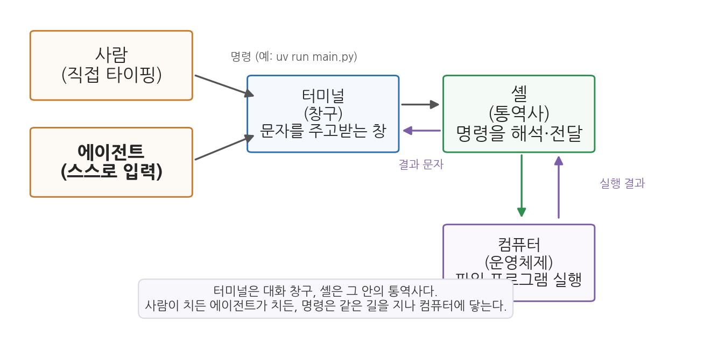
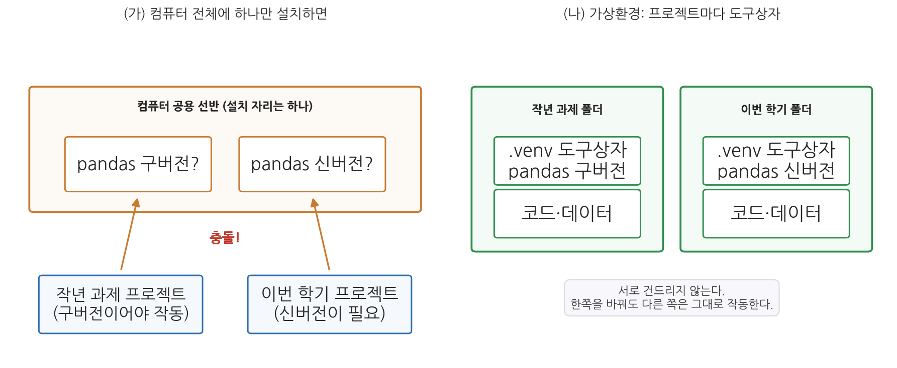
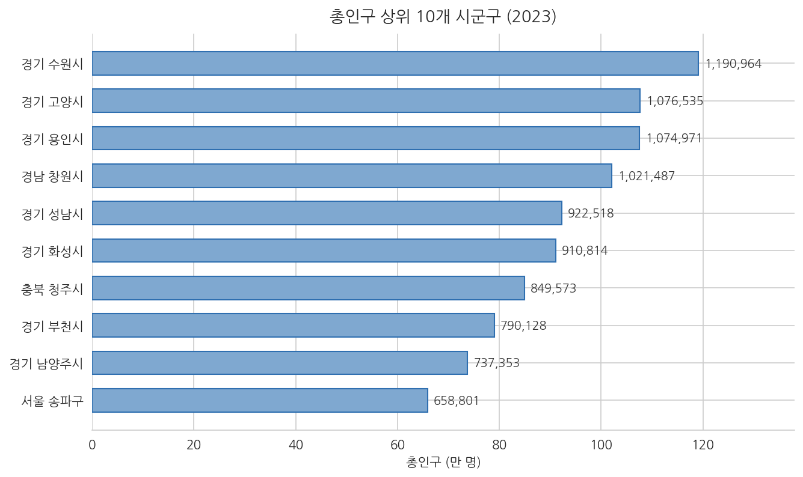
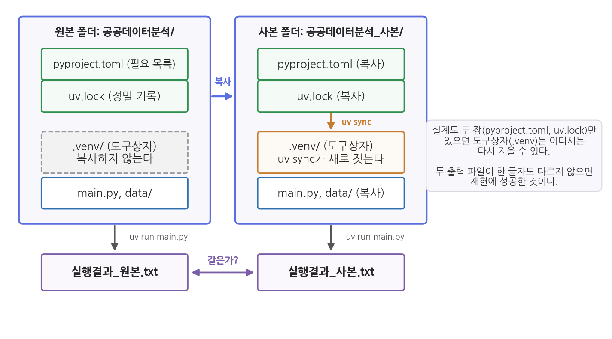
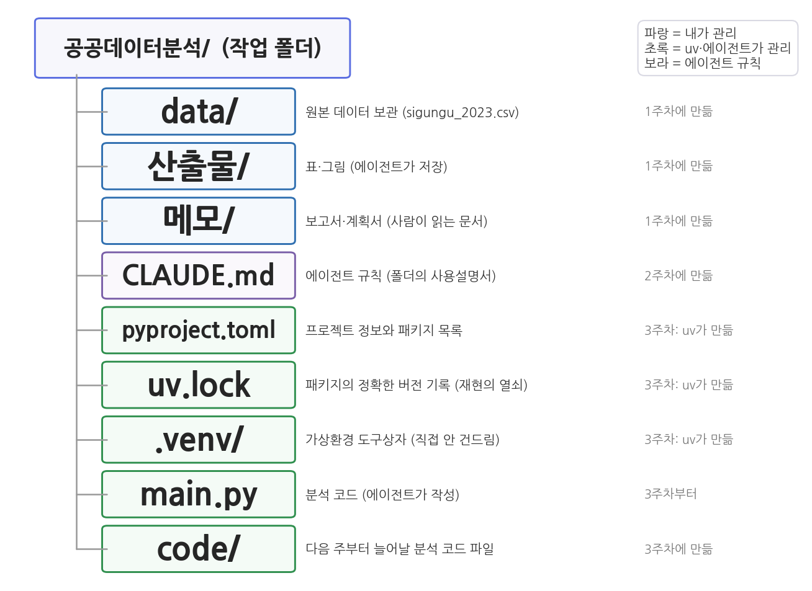

3주차 2차시. 에이전트로 분석 환경 구축하기
최종 수정: 2026-10-07 · 이 교재는 학기 중에도 계속 업데이트됩니다
이 실습에서 하는 것
1차시에서 분석 환경의 구성 요소(로컬, 터미널, 파이썬과 패키지, uv, 폴더 구조)를 이해했다. 오늘은 그 구성대로 여러분의 노트북에 실제 환경을 구축한다. 1차시에서 배운 개념은 그것이 필요한 단계에서 화면에 나온 결과를 놓고 다시 짚는다. 단계마다 있는 "먼저 알아 둘 것"과 "짚고 가기"가 그 자리다. 단, 구축하는 것은 에이전트다. 여러분은 설치 명령을 한 줄도 외우지 않는다. 대신 에이전트에게 지시하고, 에이전트가 명령을 실행하는 과정을 관찰하고, 완성된 환경을 검증한다. 오늘 만든 환경 위에서 남은 학기의 모든 분석이 돌아간다. 다음 주(4주차)의 첫 Skill도, 6주차의 MCP 수집도 이 환경에서 실행된다.
이 실습이 끝나면 다음이 갖춰진다.
- 노트북에 설치된 uv (버전 확인까지 완료)
- 공공데이터분석 폴더의 uv 프로젝트 (pyproject.toml, uv.lock, .venv)
- 설치된 분석 패키지 4종 (pandas, matplotlib, seaborn, koreanize-matplotlib)과 뒤 주차를 위해 추가한 2종 (scipy, scikit-learn)
- 첫 분석 실행 결과: sigungu_2023.csv의 요약통계 출력과 산출물 폴더의 요약통계 표 파일
- 산출물 폴더의 첫 그림 파일 (총인구 상위 10개 시군구 막대그래프)
- 사본 폴더에서 환경을 다시 구축해 같은 결과가 나오는지 확인한 재현 테스트
- 메모 폴더의 '환경보고서_3주차.md', 새로 만든 code 폴더, CLAUDE.md에 추가된 실행 규칙·폴더 규칙
- 설치 기록으로 가득 찬 대화를 직접 들여다보고(/context), 줄이고(/compact), 비우고(새 대화), 파일만 되돌리고(되감기), 갈라낸(분기) 경험. 선택 심화까지 하면 CLAUDE.md의 압축 규칙 한 줄과 data 폴더를 지키는 훅 설정이 더해진다
준비물
| 구분 | 내용 |
|---|---|
| 폴더 | 1주차에 만든 공공데이터분석 폴더 (VSCode로 열어 둘 것) |
| 데이터 | data/sigungu_2023.csv (2주차 실습에서 넣어 둔 그대로. 전국 229개 시군구 인구 지표, 출처: 행정안전부 주민등록인구통계·국가데이터처(옛 통계청) 인구동향조사, KOSIS에서 수집) |
| 도구 | VSCode + Claude Code, 인터넷 연결 (설치 파일과 패키지를 내려받는다) |
| 선수 내용 | 3주차 1차시 (uv의 세 명령, 가상환경, 폴더 구조), 2주차 (CLAUDE.md, 검증 조건, 1차시 1.1의 맥락창이 가득 찼을 때의 네 방법, 1차시 부록의 되감기·옆에서 묻기·훅) |
2.1 에이전트에게 uv 설치를 지시한다
무엇을 왜 하는가. uv는 파이썬 패키지가 아니라 컴퓨터에 한 번 설치해 두는 프로그램이다. 공식 문서(docs.astral.sh/uv)에 Windows용 설치 방법이 안내되어 있지만, 우리는 그 문서를 읽고 따라 하는 대신 에이전트에게 통째로 맡긴다. 다만 지시문에 두 가지 안전장치를 넣는다. 설치 전에 이미 설치되어 있는지 먼저 확인하게 하고(같은 것을 두 번 설치하는 헛수고 방지), 공식 문서의 방법을 쓰도록 지정한다(출처를 알 수 없는 설치법 방지).
"이 컴퓨터에 uv가 설치되어 있는지 먼저 확인해 줘. 설치되어 있지 않으면, uv 공식 문서(docs.astral.sh/uv)에 나온 Windows 표준 방법으로 설치해 줘. 끝나면 uv --version을 실행해서 설치된 버전을 알려 줘."
예상되는 에이전트의 행동과 결과. 에이전트가 먼저 터미널에서 uv --version 같은 확인 명령을 실행한다(승인 요청이 뜬다). 설치되어 있지 않은 컴퓨터에서는 터미널에 "The term 'uv' is not recognized"(uv라는 명령을 모른다)라는 붉은 문구가 찍히고, 이를 읽은 에이전트가 공식 설치 명령의 실행 승인을 요청한다. 공식 문서의 Windows 설치 명령은 다음과 같은 모습이다.
powershell -ExecutionPolicy ByPass -c "irm https://astral.sh/uv/install.ps1 | iex"
패널에는 다음과 같은 순서로 줄이 쌓인다. 1주차에서 익힌 그 모양이다.
● 먼저 uv가 설치되어 있는지 확인하겠습니다.
Bash(uv --version) ← 승인 요청
⎿ The term 'uv' is not recognized ...
● 설치되어 있지 않습니다. 공식 설치 방법으로 설치하겠습니다.
Bash(powershell -ExecutionPolicy ByPass -c "irm https://astral.sh/uv/install.ps1 | iex")
← 승인 요청
확인 명령이 설치 명령보다 먼저 온 이유를 눈여겨보자. 지시문에 "먼저 확인해 줘"라고 적었기 때문이다. 이 한마디가 없으면 이미 설치된 컴퓨터에서도 설치부터 시도하는 일이 있다. 지시문의 한 문장이 에이전트의 행동 순서를 바꾸는 것을 여기서 처음 눈으로 보게 된다.
이번 승인은 여느 때보다 꼼꼼히 읽자. 이 명령은 "인터넷 주소 astral.sh에서 설치 스크립트를 내려받아(irm) 즉시 실행하라(iex)"는 뜻이다. 인터넷에서 받은 것을 곧바로 실행하는 일은 위험할 수 있는 행동이며, 주소가 공식 사이트일 때만 승인해야 한다. astral.sh는 uv를 만든 회사의 공식 주소이므로 승인해도 된다. 설치는 보통 1분 안에 끝나고, 완료 메시지가 터미널에 출력된다. 이미 설치된 컴퓨터라면 첫 확인 명령에서 바로 버전이 찍히고, 에이전트는 설치를 건너뛰고 그 버전을 보고한다. 이 경우에도 아래 검증은 그대로 한다.
짚고 가기: 명령이 컴퓨터에 전달되는 경로. 방금 화면 아래쪽 패널에 쌓인 줄들은 컴퓨터에 일을 시키는 두 번째 방식이 쓰였다는 표시다. 우리에게 익숙한 방식은 아이콘을 눌러 프로그램을 설치하는 마우스 조작인데, 에이전트는 문자 명령으로 같은 일을 했다. 문자 명령을 입력하는 창이 터미널이고, 입력된 문자를 운영체제가 실행할 수 있는 형태로 해석해 전달하는 프로그램이 셸이다. Windows 노트북의 기본 셸은 PowerShell이며, 설치 명령이 powershell -ExecutionPolicy ByPass ...로 시작한 것도 그 때문이다.

그림 3-1을 지금 화면과 맞춰 읽어 보자. 왼쪽 위의 사람과 왼쪽 아래의 에이전트가 같은 창구(터미널)로 들어가고, 명령은 셸을 지나 컴퓨터에 닿은 뒤 결과 문자가 되돌아온다. 방금 여러분이 읽은 "The term 'uv' is not recognized"나 버전 문구가 그 되돌아온 결과 문자이며, 에이전트도 같은 문자를 읽고 다음 행동을 정했다. 사람과 에이전트가 같은 터미널을 쓰기 때문에, 에이전트가 한 일은 그 자리에서 그대로 확인할 수 있다. 명령을 외울 필요는 없다. 승인 창에 뜬 문자가 대략 무슨 일을 하려는 것인지 알아보면 된다. (자세한 설명은 1차시 1.2)
검증. "새 터미널을 열어서 uv --version을 실행하고 결과를 보여 줘"라고 지시한다(설치 직후에는 새로 연 터미널이어야 uv를 인식한다). 확인할 것은 에이전트의 요약 보고("정상 설치되었습니다")가 아니라 터미널 패널에 실제로 찍힌 출력이다.
uv 0.10.2
같은 버전 문구가 터미널에 남아 있으면 성공이다. 컴퓨터에 따라 uv 0.10.2 (a788db7e5 2026-02-10)처럼 괄호 안에 빌드 식별자와 날짜가 더 붙어 나오기도 하는데, 앞의 세 자리 숫자가 버전이므로 같은 것으로 본다. 이 과목의 기본 방식은 실행은 에이전트, 확인은 사람이다.
프로그램 설치는 파일 생성과 달리 컴퓨터 전체에 영향을 주는 행동이다. 승인 전에 최소 두 가지를 확인하는 습관을 들이자. (1) 명령 속의 인터넷 주소가 공식 사이트인가. (2) 에이전트가 설치하려는 것이 내가 지시한 바로 그 프로그램인가. 에이전트가 공식 문서와 다른 우회 방법(예: 다른 도구를 먼저 설치해서 그걸로 설치)을 제안한다면, 거부하고 "공식 문서의 표준 방법을 써 줘"라고 다시 지시하면 된다.
2.2 분석 프로젝트 생성과 패키지 설치
무엇을 왜 하는가. uv가 준비되었으니 공공데이터분석 폴더를 uv 프로젝트로 만들고(uv init), 분석 패키지 4종을 설치한다(uv add). 1차시 표 3-3에서 본 두 명령이 실전에 등장하는 순간이다.
"지금 열려 있는 이 폴더를 uv 프로젝트로 만들어 줘. 그다음 pandas, matplotlib, seaborn, koreanize-matplotlib 네 개 패키지를 uv add로 설치해 줘. 기존에 있던 파일(README.md, data 폴더 등)은 건드리지 말 것. 끝나면 (1) 새로 생긴 파일과 폴더의 목록, (2) pyproject.toml의 내용을 보여 줘."
예상되는 에이전트의 행동과 결과. 에이전트가 uv init을 실행하면 높은 확률로 오류가 하나 난다.
error: The current directory (`공공데이터분석`) is not a valid package name.
Please provide a package name with `--name`.
uv는 폴더 이름으로 프로젝트 이름을 지으려 하는데, 한글 폴더 이름은 파이썬 프로젝트 이름 규칙(영문·숫자)에 맞지 않아 uv가 프로젝트 생성을 거부한 것이다. 이 오류는 예상된 것이다. 그리고 관찰하라. 에이전트는 이 오류 문구를 읽고, 스스로 uv init --name public-data 같은 영문 이름을 붙인 명령으로 고쳐서 재시도할 것이다. 2주차에서 배운 에이전트 루프(행동 → 관찰 → 계획 수정)가 오류 앞에서 작동하는 사례다. 만약 에이전트가 해결하지 못하면 "영문 프로젝트 이름을 지정해서 다시 시도해 줘"라고 보완하면 된다.
재시도가 성공하면 터미널에는 짧은 한 줄만 찍힌다.
Initialized project `public-data`
오류는 길고 성공은 짧다. 터미널의 일반적인 성질이며, 그래서 성공을 확인하는 자리는 이 한 줄이 아니라 탐색기에 새로 생긴 파일들이다.
uv init이 성공하면 pyproject.toml, main.py, .python-version, .gitignore 등이 생긴다(기존 README.md는 그대로 남는다). 이어지는 uv add에서는 터미널에 다운로드 기록이 여러 줄 출력된 뒤, 설치된 패키지 목록이 출력된다. 이 교재를 준비하며 실행했을 때의 출력은 다음과 같았다(버전 숫자는 설치 시점에 따라 달라진다).
Resolved 16 packages in 193ms
Installed 15 packages in 1.60s
+ contourpy==1.3.3
+ koreanize-matplotlib==0.1.1
+ matplotlib==3.11.1
+ numpy==2.5.2
+ pandas==3.0.5
+ pillow==12.3.0
...
가운데를 생략하지 않으면 다음 15줄이 전부다. 알파벳 순서로 정렬되어 있어 눈으로 찾기 쉽다.
+ contourpy==1.3.3
+ cycler==0.12.1
+ fonttools==4.64.0
+ kiwisolver==1.5.1
+ koreanize-matplotlib==0.1.1
+ matplotlib==3.11.1
+ numpy==2.5.2
+ packaging==26.3
+ pandas==3.0.5
+ pillow==12.3.0
+ pyparsing==3.3.2
+ python-dateutil==2.9.0.post0
+ seaborn==0.13.2
+ six==1.17.0
+ tzdata==2026.3
처음 내려받는 컴퓨터에서는 Resolved 줄과 Installed 줄 사이에 Prepared라는 줄이 하나 더 보인다. 인터넷에서 파일을 받아 설치할 준비를 마쳤다는 뜻이다. 두 번째부터는 uv가 보관해 둔 것을 다시 쓰므로 이 줄이 사라지고 시간도 짧아지는데, 2.9절의 재현 테스트에서 이 차이를 눈으로 확인하게 된다.
짚고 가기: 4개를 시켰는데 15개가 설치된 이유. 화면의 목록을 다시 보자. 분명 네 개를 시켰는데 numpy, pillow처럼 시킨 적 없는 이름까지 열다섯 개가 찍혔다. 오류가 아니다. 파이썬 자체는 사칙연산과 파일 읽기 같은 기본기만 갖춘 상태이고, 표 계산이나 그래프 같은 전문 기능은 다른 사람들이 만들어 공개한 패키지를 내려받아 설치해 사용한다. 방금 지시한 넷이 그 패키지다. pandas는 표를 읽고 자르고 집계하는 도구, matplotlib는 그림을 그리는 도구, seaborn은 matplotlib 위에서 통계 그래프를 더 쉽게 그리는 도구, koreanize-matplotlib는 그래프의 한글 깨짐을 막는 작은 도구다. 이 넷은 2.4절부터 차례로 실제로 쓰인다.
나머지 열한 개는 이 네 패키지가 동작하는 데 필요한 다른 패키지다. pandas가 일하려면 수치 계산을 맡는 numpy가 있어야 하고, matplotlib가 그림을 파일로 저장하려면 이미지를 다루는 pillow가 있어야 한다. 이렇게 패키지가 필요로 하는 다른 패키지를 의존성(dependency)이라 부르며, uv가 필요한 의존성을 알아서 함께 내려받은 것이다. 받아 오는 곳은 파이썬 패키지 공식 저장소인 PyPI이고, 설치되는 위치는 컴퓨터 전체가 공유하는 파이썬 환경이 아니라 이 폴더에 새로 생긴 .venv다. 이 폴더가 무엇인지는 다음 단계에서 의존성 명세 두 파일과 함께 짚는다. (자세한 설명은 1차시 1.3, 표 3-2)
검증. 세 가지를 확인한다. (1) pyproject.toml의 dependencies 항목에 지시한 4개 패키지 이름이 모두 들어 있는가. (2) .venv 폴더와 uv.lock 파일이 새로 생겼는가. (3) 1주차에 만든 README.md와 data 폴더가 그대로인가. 세 번째가 빠지기 쉬운데, "건드리지 말 것"이라는 제약이 지켜졌는지도 검증 대상이다.
2.3 의존성 명세 읽기: pyproject.toml과 uv.lock
무엇을 왜 하는가. 방금 폴더에 생긴 pyproject.toml과 uv.lock을 읽어 본다. 두 파일은 uv가 관리하므로 고칠 일은 없지만 읽을 줄은 알아야 한다. "이 패키지가 설치되어 있나", "어떤 버전인가"라는 질문은 전부 이 두 파일에서 확인하기 때문이다. 설명은 에이전트에게 시키되, 그 설명이 파일 내용과 맞는지는 여러분이 파일을 열어 대조한다.
"pyproject.toml과 uv.lock 두 파일을 읽고 처음 보는 사람에게 설명해 줘. (1) pyproject.toml의 dependencies에 적힌 각 줄이 무슨 뜻인지, 특히 >= 기호의 의미, (2) uv.lock에 기록된 패키지가 모두 몇 개인지 파일에서 직접 세어서, (3) 그중 pandas와 numpy의 정확한 버전, (4) 내가 numpy를 설치하라고 한 적이 없는데 왜 들어 있는지를 uv.lock의 어느 부분을 근거로 답할 수 있는지 알려 줘. 두 파일에 없는 내용은 없다고 답해 줘."
예상되는 에이전트의 행동과 결과. 이번에는 터미널 대신 파일 읽기 도구가 두 번 쓰인다. 에이전트는 먼저 pyproject.toml의 dependencies 부분을 인용한다.
dependencies = [
"koreanize-matplotlib>=0.1.1",
"matplotlib>=3.11.1",
"pandas>=3.0.5",
"seaborn>=0.13.2",
]
그리고 >=가 "이 버전 이상이면 된다"는 느슨한 조건이며, 실제로 무엇이 설치되었는지는 uv.lock이 정확히 기록한다고 설명한다. uv.lock에 대해서는 [[package]]로 시작하는 덩어리를 세어 개수를 보고하는데, 이 교재를 준비하며 실행했을 때는 16개였다. 15개 패키지에 프로젝트 자신(public-data)이 하나의 덩어리로 더해진 수다. 이어서 pandas 덩어리를 인용한다.
[[package]]
name = "pandas"
version = "3.0.5"
dependencies = [
{ name = "numpy" },
{ name = "python-dateutil" },
...
]
이 덩어리의 dependencies 줄이 (4)번의 답이다. numpy는 여러분이 아니라 pandas가 요구한 것이고, 그 사실이 uv.lock에 적혀 있다.
짚고 가기: 의존성 명세 두 파일과 가상환경 하나. 지금 화면에 있는 두 파일과 아까 생긴 .venv 폴더는 역할이 서로 다르다. pyproject.toml은 "이 프로젝트에는 pandas와 matplotlib가 필요하다"고 적은 필요 패키지 목록이며, >=가 붙어 있어 버전 조건이 느슨하다. uv.lock은 실제로 설치된 것이 pandas 3.0.5, 그것이 필요로 하는 numpy 2.5.2라는 식으로 버전과 파일 해시까지 확정해 적은 정밀 기록이다. 그리고 .venv는 그 기록대로 실제 패키지가 설치된 프로젝트 전용 가상환경이다.

가상환경을 폴더마다 따로 두는 이유가 그림 3-2에 있다. 왼쪽(가)처럼 컴퓨터 전체가 공유하는 한 곳에만 pandas를 설치하면, 구버전이라야 도는 작년 프로젝트와 신버전이 필요한 이번 학기 프로젝트가 충돌한다. 어느 쪽을 설치해도 다른 쪽이 깨지고, 동료의 컴퓨터와 버전이 다르면 같은 코드가 내 쪽에서만 도는 "제 컴퓨터에서는 되는데요" 문제가 된다. 오른쪽(나)이 지금 여러분의 폴더다. 방금 설치한 열다섯 개는 공유 환경이 아니라 이 프로젝트 폴더 안의 .venv에만 설치되었으므로, 다른 폴더의 프로젝트는 여기서 무엇을 설치하든 영향을 받지 않는다. 가상환경은 용량이 크고 컴퓨터마다 다르지만 의존성 명세 두 파일은 작은 텍스트 파일이며, 이 두 파일만 있으면 가상환경을 다시 구축할 수 있다는 것이 2.9절의 재현 테스트에서 확인할 내용이다. (자세한 설명은 1차시 1.4, 그림 3-2)
검증. 에이전트의 설명을 파일에서 확인한다. pyproject.toml의 dependencies가 4줄인지, uv.lock에서 name = "pandas" 바로 아랫줄의 version 값이 에이전트가 말한 버전과 같은지, 찾기 결과에 나오는 [[package]]의 개수가 보고된 수와 같은지를 차례로 본다. 마지막 하나가 이 단계의 요점이다. pandas 덩어리 안의 dependencies에 numpy가 정말 적혀 있는가. 에이전트가 "pandas가 numpy를 씁니다"라고 상식으로 답했는지 파일을 근거로 답했는지는 이 줄을 가리켰는가로 구분된다.
두 파일 모두 uv가 관리한다. 특히 uv.lock은 실제 설치 내용과 한 글자도 어긋나면 안 되는 기록이므로, 읽는 것은 좋지만 편집기에서 고치지 않는다. 패키지를 넣고 빼는 방법은 uv add와 uv remove뿐이며, 그때 두 파일은 uv가 알아서 고쳐 쓴다. 에이전트가 이 파일들을 직접 편집하려 하면 거부하고 uv 명령을 쓰게 한다.
버전을 고정한다는 것. uv.lock을 조금만 더 살펴보자. 방금 본 pandas 덩어리에는 버전과 의존성 말고도 한 가지가 더 적혀 있다. 이 패키지의 실제 파일을 어디서 받았고, 받은 파일이 정말 그 파일인지 확인하는 값이다.
"uv.lock에서 pandas 덩어리를 다시 찾아, version 줄과 source 줄, 그리고 wheels 목록에서 파일 이름에 win_amd64가 들어간 줄 하나를 그대로 인용해 줘. 그다음 그 줄의 hash가 무엇을 보증하는 값인지 두 문장으로 설명해 줘. 파일에 없는 내용은 지어내지 말고 없다고 답할 것."
에이전트가 인용해 오는 부분은 다음과 같은 모습이다. 주소가 길어 가운데를 줄였다.
[[package]]
name = "pandas"
version = "3.0.5"
source = { registry = "https://pypi.org/simple" }
wheels = [
{ url = ".../pandas-3.0.5-cp314-cp314-win_amd64.whl",
hash = "sha256:cd8f7c6dc98527058ee6264219343f5392240a6f1bfa654fc5d79023020d0c92",
size = 9951806 },
]
세 가지가 적혀 있다. version은 무슨 버전인지, source는 어디서 받았는지(PyPI, 곧 1차시에서 본 파이썬 패키지 저장소), hash는 받은 파일이 그때 그 파일이 맞는지 확인하는 값(해시)이다. 파일이 한 글자라도 다르면 이 값이 달라지므로, 다른 컴퓨터에서 uv가 정말 같은 파일을 받았는지 대조할 수 있다. 파일 이름 속의 win_amd64는 Windows용이라는 뜻이고, 같은 pandas 3.0.5라도 운영체제마다 다른 파일이 준비되어 있어서 목록이 그렇게 길다. 여러분의 노트북에 실제로 설치된 것은 그중 win_amd64 한 줄이다.
확인은 손으로 한다. uv.lock에서 pandas 덩어리 안의 win_amd64 줄을 직접 찾아, 파일 이름 안의 3.0.5와 hash의 앞 여덟 자리(cd8f7c6d)가 에이전트의 인용과 같은지 대조해 보라. 이 여덟 자리를 외울 필요는 없다. 다만 uv.lock이 "pandas가 필요하다" 수준이 아니라 "이 파일을 받아서 넣었다" 수준의 기록이라는 것은 한 번 눈으로 봐 두어야 한다.
지나쳐 보일 수 있다. 그러나 패키지는 계속 개량되고, 그 과정에서 계산의 기본값이나 결과를 보여 주는 방식이 바뀌기도 한다. 같은 코드가 1년 뒤에 조금 다른 숫자나 다른 모양의 표를 내놓는 일이 그래서 생긴다. 보고서나 논문이라면 이것은 곧 재현 실패다. uv.lock은 "그 버전의 패키지로 계산했다"는 사실을 파일 하나로 증명하는 장치이며, 14주차에 제출할 재현 꾸러미의 핵심이 여기에 있다. 이 파일을 빼놓고 코드만 건네면 어떤 버전으로 계산했는지 알 수 없어 같은 결과를 보장할 수 없다.
2.4 첫 실행: CSV를 읽고 요약통계 출력
무엇을 왜 하는가. 환경이 완성되었는지는 목록이 아니라 실행으로 증명된다. 첫 과제는 소박하게, sigungu_2023.csv를 읽어 기초 정보와 요약통계를 출력하는 것이다. 2주차에는 에이전트가 이 파일을 "눈으로 훑어" 답했다면, 오늘은 pandas로 "계산해서" 답한다.
"main.py를 다음 내용으로 다시 작성해 줘. data 폴더의 sigungu_2023.csv를 pandas로 읽어서 (1) 행과 열의 개수, (2) 열 이름 목록, (3) 총인구·고령인구비율·합계출산율 세 열의 요약통계(개수, 평균, 최솟값, 최댓값 포함), (4) 총인구가 가장 많은 시군구와 가장 적은 시군구를 출력할 것. 코드 각 부분에 한국어 주석을 달고, uv run main.py로 실행해서 결과를 보여 줘."
예상되는 에이전트의 행동과 결과. 에이전트가 main.py를 고쳐 쓰고(원래 들어 있던 "Hello from ..." 인사 코드를 지우고 새 코드를 넣는다), uv run main.py의 실행 승인을 요청한다. 실행 결과는 대략 다음과 같은 모습이어야 한다(소수점 자리수는 코드에 따라 다를 수 있다).
행과 열의 개수: (229, 12)
총인구 고령인구비율 합계출산율
count 229.000 229.000 228.000
mean 224624.620 24.980 0.823
min 8996.000 10.677 0.320
max 1190964.000 45.278 1.651
총인구 최대: 경기 수원시 1190964
총인구 최소: 경북 울릉군 8996
- 행과 열: 229행, 12열
- 총인구: 평균 약 224,625명, 최댓값 1,190,964명(경기 수원시), 최솟값 8,996명(경북 울릉군)
- 고령인구비율: 평균 약 25.0%, 최댓값 약 45.3%(경북 의성군)
- 합계출산율: 평균 약 0.823, 최솟값 0.320(부산 중구), 최댓값 1.651(전남 영광군)
실제 화면에는 위의 예시보다 줄이 조금 더 많다. pandas의 요약통계는 여덟 줄이 기본이기 때문이다. 코드에 따라 반올림 자리수는 달라지지만 줄의 구성은 다음과 같다.
총인구 고령인구비율 합계출산율
count 229.000 229.000 228.000
mean 224624.620 24.980 0.823
std 223012.333 8.851 0.213
min 8996.000 10.677 0.320
25% 50186.000 17.519 0.688
50% 146701.000 22.707 0.790
75% 337416.000 32.206 0.916
max 1190964.000 45.278 1.651
여덟 줄의 이름은 차례로 개수, 평균, 표준편차, 최솟값, 25% 지점, 50% 지점(중앙값), 75% 지점, 최댓값이다. 오늘 쓰는 것은 첫 줄(count)과 mean, min, max 네 줄이고, 나머지 네 줄은 9주차 EDA에서 분포를 다룰 때 본격적으로 쓴다. 다만 한 줄만 미리 짚어 두자. 총인구의 50% 지점은 146,701명인데 평균은 224,625명이다. 절반이 넘는 시군구가 평균보다 작다는 뜻이며, 수원시처럼 큰 곳 몇 군데가 평균을 끌어올렸기 때문이다. 평균 하나만 보고 "보통의 시군구는 22만 명쯤"이라고 말하면 잘못된 이해에 이르게 된다는 것을 여기서 미리 확인해 둔다.
짚고 가기: 표 한 장을 읽는다는 것, 그리고 uv run으로 실행하는 이유. 방금 화면에 찍힌 숫자들은 에이전트가 파일을 훑어보고 말한 값이 아니라 계산해서 나온 값이다. 코드 첫 줄의 import pandas as pd가 2.2절에서 설치한 패키지를 불러오는 동작이고, pd.read_csv(...) 한 줄이 sigungu_2023.csv를 229행 12열짜리 표 한 장으로 읽어들인다. pandas가 다루는 이 표를 데이터프레임(DataFrame)이라 부른다. 표를 읽어 들이면 "총인구 열의 평균을 구하라", "가장 큰 행을 찾아라" 같은 명령을 한 줄씩 내릴 수 있고, 방금의 요약통계도 그런 명령 한 줄의 결과다. 2주차에는 같은 파일을 에이전트가 눈으로 훑어 답했지만, 오늘부터는 계산이 답한다.
실행 명령이 python main.py가 아니라 uv run main.py인 것도 눈여겨보자. 그냥 python으로 실행하면 컴퓨터에 설치된 일반 파이썬이 실행되기 때문에 가상환경(.venv)에 설치한 pandas를 찾지 못하고 "그런 모듈이 없다"는 오류(ModuleNotFoundError)가 난다. uv run은 실행 전에 가상환경이 uv.lock의 기록과 맞는지 확인하고, 어긋나 있으면 맞춘 다음, 가상환경의 파이썬으로 실행한다. 따라서 실행할 때마다 환경 점검이 함께 이루어진다. 그래서 이 과목의 규칙은 단순하다. 파이썬 실행은 언제나 uv run으로 한다. 이 규칙은 2.10절에서 CLAUDE.md에 적어 둔다. (자세한 설명은 1차시 1.3, 1.4)
검증. 두 가지를 한다.
검증 1: 아는 값과 대조. 행 수 229는 2주차 실습에서 확인했던 시군구 수와 같은가. 총인구 1위로 보고된 시군구는 원본에서 대조한다. 32번째 줄(첫 줄은 열 이름)이 경기,수원시,1190964.0,...인지 보면 된다.
검증 2: 이상한 숫자 하나를 추궁한다. 출력된 요약통계에서 "개수(count)" 줄을 보라. 총인구는 229인데 합계출산율은 228이다. 시군구는 229개인데 왜 출산율 값은 228개뿐인가. 에이전트가 이 차이를 먼저 언급했는가? 대부분 언급 없이 지나간다. 더 나쁜 경우에는 요약 문장에 "229개 시군구의 합계출산율 평균은 0.823"이라고 적기도 한다. 표는 그럴듯하게 뽑지만 그 안의 이상 신호까지 챙겨 보고하지는 않는 것, 이것이 에이전트 보고의 전형적인 한계다. 다음 지시로 추궁해 보자.
"요약통계에서 합계출산율의 개수가 228로 총인구(229)보다 1 적다. 어느 시군구의 값이 비어 있는지 데이터에서 직접 확인해서 알려 줘. 추측하지 말고 코드로 확인할 것."
에이전트가 결측값을 찾는 코드를 실행하면, 경북 군위군의 합계출산율(과 출생아수)이 비어 있다는 답이 나온다. CSV 파일의 73번째 줄을 열어 보면 군위군 행의 끝이 쉼표 두 개로 끝나 있다. 값이 비어 있는 칸을 결측값(missing value)이라 부르는데, 왜 생기고 어떻게 다루는지는 7주차의 주제다. 오늘 기억할 것은 하나다. 평균 0.823은 229개가 아니라 228개의 평균이며, 그 사실은 검증하는 사람의 눈에만 보였다는 것.
2.5 산출물 남기기: 요약통계를 표 파일로 저장
무엇을 왜 하는가. 화면에 찍힌 출력은 대화가 끝나면 사라진다. 웹 챗이었다면 방금의 요약통계도 대화와 함께 사라졌겠지만, 내 노트북에서 작업하면 파일로 남겨 다음 주 실습에서 이어서 사용할 수 있다. 1차시 1.5절의 원칙대로 산출물은 코드가 만들고 산출물 폴더에 모아야 하므로, 방금의 요약통계를 파일로 저장하게 한다. 이번 지시문에는 저장할 폴더를 일부러 적지 않는다. 지시에 없는 것을 에이전트가 어떻게 정하는지 관찰하기 위해서다.
"방금 출력한 세 열의 요약통계를 CSV 파일로도 저장하도록 main.py를 고쳐 줘. 파일 이름은 요약통계_3주차.csv로 하고, 고친 뒤 uv run main.py를 다시 실행해서 파일이 어디에 생겼는지 전체 경로를 알려 줘."
예상되는 에이전트의 행동과 결과. 에이전트가 main.py에 저장 코드 한 줄(to_csv)을 보태고 다시 실행한 뒤 파일 경로를 보고한다. 여기서 에이전트가 틀리는 장면이 흔히 나온다. 폴더를 지정하지 않았으므로 파일을 프로젝트 폴더 맨 위에 만들거나, 심지어 원본이 있는 data 폴더 안에 넣기도 한다. 저장된 파일의 내용은 다음과 같다.
,총인구,고령인구비율,합계출산율
count,229.0,229.0,228.0
mean,224624.62,24.98,0.823
min,8996.0,10.677,0.32
max,1190964.0,45.278,1.651
짚고 가기: 산출물에도 저장 위치가 있다. 파일이 생긴 자리가 여러분이 생각한 자리와 달랐다면, 그것은 에이전트의 잘못이라기보다 지시에 빠진 부분 때문이다. 지시에 없는 것은 에이전트가 정하고, 그 결정은 내 폴더 규칙과 다를 수 있다. 분석 프로젝트가 시작할 때 폴더 구조부터 정해 두는 이유가 여기에 있다. 원칙은 세 가지다. 첫째, 원본 데이터는 data 폴더에 두고 절대 고치지 않는다. 원본은 분석의 최종 근거이므로 가공이 필요하면 사본으로 하며, 에이전트가 원본을 덮어쓰면 되돌릴 수 없다. 둘째, 코드와 산출물을 분리한다. 코드는 산출물을 만드는 절차이고 산출물은 그 절차의 결과여서, 나누어 두면 "이 표를 어떻게 만들었는가"라는 물음에 코드 파일로 답할 수 있다. 셋째, 산출물은 언제든 버리고 다시 만들 수 있게 유지한다. 방금 만든 요약통계 표가 그 예다. 숫자가 마음에 들지 않아도 표 파일을 손으로 고치는 것이 아니라 main.py를 고쳐 다시 실행한다.
이 누락은 매번 말로 보완하는 것보다 규칙으로 보완하는 편이 낫다. 2.10절에서 "산출물은 산출물 폴더에 저장할 것"을 CLAUDE.md에 적어 두면, 그다음부터는 지시문에 저장 위치를 쓰지 않아도 에이전트가 정해진 위치에 저장한다. (자세한 설명은 1차시 1.5)
검증. 파일이 어디에 생겼는지부터 본다. 산출물 폴더가 아니면 재지시한다. "요약통계_3주차.csv를 산출물 폴더로 옮기고, main.py의 저장 경로도 산출물/요약통계_3주차.csv로 고쳐서 다시 실행해 줘. data 폴더에는 원본 파일만 둔다." 고친 뒤 산출물 폴더에만 파일이 있고 엉뚱한 자리의 파일은 지워졌는지 확인한다. 위치가 바로잡혔으면 파일을 열어 count 줄이 229, 229, 228인지, max 줄의 총인구가 2.4절에서 본 수원시 값(1190964.0)과 같은지 대조한다.
2.6 패키지 추가하기: 필요한 패키지는 늘어난다
무엇을 왜 하는가. 환경은 한 번 구축하고 끝나는 것이 아니라 필요할 때 늘려 간다. 10주차의 통계 검정에는 scipy가, 11주차의 텍스트 분석에는 scikit-learn이 필요하다. 지금 두 패키지를 추가하면서, 추가 전후로 pyproject.toml과 uv.lock이 어떻게 달라지는지 대조해 본다. 2.3절에서 읽는 법을 배운 두 파일이 검증의 근거다.
"scipy와 scikit-learn 두 패키지를 이 프로젝트에 추가해 줘. 반드시 uv add를 쓸 것. 추가하기 전에 pyproject.toml의 dependencies 부분과 uv.lock의 패키지 개수를 먼저 보여 주고, 추가한 뒤에 같은 두 가지를 다시 보여 줘서 무엇이 달라졌는지 비교해 줘. 끝나면 uv run으로 두 패키지를 import해서 설치된 버전을 출력해 줘."
예상되는 에이전트의 행동과 결과. 에이전트가 두 파일을 읽어 "추가 전" 상태(dependencies 4줄, 패키지 16개)를 보고한 뒤 uv add scipy scikit-learn의 승인을 요청한다. 실행 출력은 2.2절과 같은 꼴이다.
Resolved 22 packages in 137ms
Installed 6 packages in 1.37s
+ joblib==1.6.0
+ scikit-learn==1.9.0
+ scipy==1.18.1
+ threadpoolctl==3.6.0
...
"추가 후" 보고에는 dependencies가 6줄로, uv.lock의 패키지가 22개로 늘었다고 나온다. 시킨 것은 2개인데 6개가 설치된 이유는 2.2절에서 본 의존성이다. 버전 출력에서 한 가지를 눈여겨보자. 설치할 때의 이름은 scikit-learn이지만 코드에서 부를 때의 이름은 sklearn이다. 에이전트가 쓴 코드에 import sklearn이 보여도 오타가 아니다.
짚고 가기: 기록되지 않은 설치. 지시문에 "반드시 uv add를 쓸 것"을 넣은 데는 이유가 있다. 이 문구 없이 "설치해 줘"라고만 하면 에이전트가 uv pip install scipy를 쓰는 경우가 있다. 앞에 uv가 붙어 있어 승인 창에서 지나치기 쉽지만, 이 명령은 가상환경(.venv)에 패키지를 설치하기만 하고 pyproject.toml과 uv.lock에는 아무것도 적지 않는다. 당장은 import가 되므로 잘못된 줄 알아차리지 못한다. 문제는 나중에 드러난다. 2.3절에서 본 대로 다른 컴퓨터가 읽는 것은 가상환경이 아니라 의존성 명세 두 파일인데, 그 파일에 scipy가 없으면 옮겨 간 곳에는 scipy가 설치되지 않는다. 2.9절에서 사본 폴더에 환경을 구축해 보면 실제로 빠져 있다. 설치는 됐지만 기록이 안 된 상태이며, 아래 검증의 첫 항목이 이것을 잡아낸다.
검증. pyproject.toml의 dependencies가 6줄로 늘었는지부터 본다. scikit-learn과 scipy 줄이 없다면 기록 없는 설치가 일어난 것이므로 "pyproject.toml에 기록되지 않았다. uv add scipy scikit-learn으로 다시 해 줘"라고 재지시하고 다시 확인한다. 이어서 uv.lock의 scipy 버전이 화면에 출력된 버전과 같은지, [[package]] 개수가 추가 전보다 6 늘었는지 대조한다.
2.7 첫 그림 그려 보기: 총인구 상위 10개 시군구
무엇을 왜 하는가. 지금까지의 산출물은 숫자와 표였다. 이제 그림을 한 장 만든다. 그림 그리기는 환경 점검의 마지막 단계이기도 하다. 표 하나를 만드는 데는 pandas 하나면 되지만, 그림 한 장에는 값을 고르는 pandas, 그리는 matplotlib, 한글 글꼴을 적용하는 koreanize-matplotlib, 그림을 파일로 저장하는 pillow가 함께 쓰인다. 2.2절에서 4개를 시켰더니 15개가 설치된 이유가 여기서 드러난다. 그림 파일이 산출물 폴더에 제대로 저장되면 그 15개가 함께 정상 작동한다는 뜻이다. 주제는 총인구 상위 10개 시군구다. 2.4절에서 1위 수원시와 최하위 울릉군만 보았으니, 위쪽 열 곳의 모습을 한눈에 보는 셈이다.
"main.py에 그림 그리는 부분을 추가해 줘. sigungu_2023.csv에서 총인구가 많은 상위 10개 시군구를 골라 가로 막대그래프를 그리고, 산출물 폴더에 상위10_총인구.png로 저장할 것. 조건은 네 가지야. (1) 막대 이름표에 시도와 시군구를 함께 적을 것. 같은 이름의 구가 여러 시도에 있기 때문이야. (2) 한글이 깨지지 않도록 koreanize-matplotlib를 쓸 것. (3) 막대 끝에 총인구 값을 숫자로 적을 것. (4) 저장이 끝나면 저장한 파일의 전체 경로와, 그림에 쓴 열 곳의 이름과 값을 순서대로 출력해서 내가 그림과 대조할 수 있게 해 줘."
예상되는 에이전트의 행동과 결과. 에이전트가 main.py에 matplotlib를 쓰는 부분을 붙이고 uv run main.py를 다시 실행한다. 화면에 그림 창이 뜨는 것이 아니라 파일이 저장되고, 터미널에는 지시한 대조용 목록이 찍힌다.
저장: C:\Users\사용자이름\Desktop\공공데이터분석\산출물\상위10_총인구.png
1. 경기 수원시 1,190,964
2. 경기 고양시 1,076,535
3. 경기 용인시 1,074,971
4. 경남 창원시 1,021,487
5. 경기 성남시 922,518
6. 경기 화성시 910,814
7. 충북 청주시 849,573
8. 경기 부천시 790,128
9. 경기 남양주시 737,353
10. 서울 송파구 658,801
탐색기에서 산출물 폴더의 PNG 파일을 클릭하면 VSCode 안에서 그림이 열린다. 다음과 같은 모습이어야 한다.

그림 3-4를 읽는 법은 이렇다. 가로축은 총인구이고 단위는 만 명이며, 막대 끝에 붙은 숫자는 명 단위의 실제 값이다. 세로축은 시군구이고 위에서 아래로 인구가 많은 순서다. 여기서 알 수 있는 것은 세 가지다. 첫째, 1위 수원시(1,190,964명)와 10위 송파구(658,801명)의 차이가 1.81배로 상위권 안에서도 격차가 작지 않다. 둘째, 열 곳 가운데 일곱 곳이 경기도이고 서울은 송파구 한 곳뿐이다. 셋째, 100만 명을 넘는 곳이 수원시, 고양시, 용인시, 창원시 네 곳이다. 2.4절에서 본 최솟값 8,996명(경북 울릉군)을 옆에 놓으면, 같은 시군구라는 이름으로 불리는 행정단위 사이의 규모 차이가 얼마나 큰지 짐작할 수 있다.
그림을 보았으면 한 걸음 더 물어본다. 그림은 눈으로 보는 요약이고, 수치는 문장으로 쓸 수 있는 요약이다.
"방금 그린 상위 10개 시군구의 총인구를 모두 더하면 229개 시군구 총인구 합계의 몇 퍼센트인지 계산해 줘. 상위 10개의 합과 전체 합 두 값을 함께 보여 주고, 추측하지 말고 데이터에서 직접 계산할 것."
답은 9,233,144명과 51,439,038명, 곧 17.9%다. 시군구 개수로는 전체 229개의 4.4%에 해당하는 열 곳에 인구의 5분의 1 가까이가 모여 있는 셈이다. 이런 한 문장이 9주차 EDA에서 다루는 분포의 쏠림을 다루는 논의의 출발점이 된다.
여기서 틀리는 장면. 그림을 열었더니 시군구 이름 자리에 네모(□□ □□□)만 늘어서 있는 경우가 흔하다. 에이전트는 "그림을 저장했습니다"라고 정상 보고한다. 파일은 실제로 만들어졌고 크기도 정상이므로 그 보고가 거짓은 아니다. 다만 그림 안의 한글이 깨졌을 뿐이다. 원인은 대개 두 가지다. 코드에 import koreanize_matplotlib 줄이 아예 빠졌거나, 그 줄은 있는데 뒤에 그래프 스타일을 설정하는 줄(예: seaborn의 스타일 지정)이 와서 글꼴 설정을 원래대로 되돌린 것이다. 발견하는 방법은 그림을 눈으로 여는 것뿐이다. 터미널 출력도, 파일 크기도, 에이전트의 보고도 이 문제를 알려 주지 않는다.
"그림의 한글이 네모로 깨져 있어. 코드에서 koreanize_matplotlib를 가져오는 줄이 그래프 스타일을 설정하는 줄보다 뒤에 오도록 고치고, 다시 실행해서 저장해 줘. 무엇을 어떻게 바꿨는지도 알려 줘."
고친 뒤 그림을 다시 열어 이름이 제대로 보이는지 확인한다. 틀림, 발견, 재지시, 수정의 순환을 한 번 더 거친 것인데, 이번 틀림은 사람의 눈으로만 발견되는 종류였다는 점이 요지다.
검증. 파일의 자리와 그림 속을 함께 본다. 먼저 상위10_총인구.png가 산출물 폴더에 있는지 보고, 폴더 맨 위나 data 폴더에 생겼다면 2.5절과 같은 방식으로 재지시한다. 그다음 그림을 열어 시군구 이름이 한글로 보이는지, 1위 막대에 적힌 값(1,190,964)이 2.4절 요약통계의 총인구 최댓값과 같은지 본다. 같은 파일에서 나온 값이므로 달라질 수 없고, 다르다면 다른 파일을 읽은 것이다. 마지막으로 목록에서 한 곳을 골라 원본과 대조한다. 7위 충북 청주시는 CSV의 229번째 줄에 있고 총인구는 849573.0이다. 마지막 데이터 줄이 230번째 줄이니 청주시는 파일 거의 끝에 있는 셈인데 그림에서는 7위에 놓여 있다. 파일 안의 순서(시도 이름 순)와 그림의 순서(인구 순)가 다르다는 것, 곧 정렬은 파일이 아니라 코드가 한 일이라는 것도 이 대조에서 함께 확인된다.
2.8 오류가 나면: 에이전트와 함께 디버깅하기
무엇을 왜 하는가. 오류는 분석 작업의 일상이므로 만났을 때의 절차를 미리 정해 둔다. 오늘 여기까지 오는 동안 붉은 글자를 한 번도 못 보았더라도, 남은 학기의 어느 날에는 반드시 만난다. 프로그래머들은 오류를 찾아 고치는 일을 디버깅(debugging)이라 부르는데, 에이전트 시대의 디버깅은 오류문을 읽고, 원인 설명과 수정안을 에이전트에게 시키고, 고쳐진 것을 확인하는 순환이다. 이 절은 그 순환을 정리해 둔 곳이니 지금 읽어 두었다가 실제로 오류를 만난 날 다시 펴 보면 된다.
먼저 읽는 법이다. 파이썬 오류문은 아래에서 위로 읽는다. 화면이 길고 복잡해 보여도 오류의 이름과 핵심 메시지는 맨 마지막 줄에 있고, 그 한 줄에 원인이 그대로 적혀 있는 경우가 많다. 예를 들어 FileNotFoundError: [Errno 2] No such file or directory: 'data/sigungu_2024.csv'는 "그런 파일이나 폴더가 없다"는 뜻이며, 없다고 말하는 그 경로까지 함께 알려 준다. pandas처럼 여러 겹으로 된 패키지에서는 "The above exception was the direct cause of the following exception"이라는 문장을 사이에 두고 Traceback이 두 번 나오기도 하는데, 안쪽에서 난 오류를 잡아 다시 던졌기 때문이며 읽을 곳은 여전히 맨 아래다. 오류문은 원인을 알려 주는 정보다.
다음은 에이전트에게 넘기는 방법이다. 요약하지 말고 화면에 찍힌 오류 메시지 전문을 그대로 붙여 준다. 에이전트가 직접 실행한 명령에서 난 오류라면 에이전트도 그 화면을 보고 있지만, "오류가 났어"라고만 하면 짐작으로 답할 여지가 생긴다. 그리고 고치는 것을 곧바로 시키지 않고 원인과 수정안을 먼저 요구한다. 무엇을 어떻게 바꿀지 듣고 나서 승인하는 것이 2주차에서 배운 계획 모드의 습관이다.
"방금 실행에서 아래 오류가 났어.
(터미널에 찍힌 오류 메시지 전문을 그대로 붙여넣기)
이 오류의 원인을 한 문장으로 설명하고, 어느 파일의 어느 부분을 무엇으로 바꿀 것인지 먼저 알려 줘. 고치는 것은 내가 좋다고 한 다음에 해 줘. 부탁하지 않은 다른 부분은 건드리지 말 것."
예상되는 에이전트의 행동과 결과. 에이전트는 마지막 줄을 짚어 원인을 말하고, 고칠 자리와 바꿀 내용을 알려 준다. 위의 예라면 "코드가 읽으려는 data/sigungu_2024.csv가 폴더에 없다"고 설명하고, data 폴더의 파일 목록을 확인한 뒤 코드의 파일 이름을 실제로 있는 sigungu_2023.csv로 바로잡겠다고 제안하는 식이다. 여기서 여러분이 판단할 것은 그 수정이 오류의 원인을 해결하는가, 아니면 오류 메시지만 없애는가다. 예를 들어 열 이름을 찾지 못한다고 해서 그 열을 계산에서 빼 버리는 수정은 오류 메시지는 사라지게 하지만 결과를 바꾼다. 자주 있는 일이 하나 더 있다. 먼저 알려 달라고 했는데도 오류를 보자마자 고쳐 버리는 경우다. 오류를 고치려는 경향이 지시보다 강하게 작동한 것이며, 이럴 때는 "방금 무엇을 어떻게 고쳤는지 알려 줘"라고 되물어 바뀐 내용을 확인한다.
오류의 이름만 보고도 어디부터 볼지 짐작할 수 있으면 이 과정이 빨라진다. 자주 만나는 여섯 가지를 표 3-4로 정리해 둔다. 지금 외울 필요는 없고, 오류를 만난 날 이름으로 찾아보면 된다.
표 3-4. 오류 메시지 읽는 법 (마지막 줄만 보면 된다)
| 오류 이름 | 마지막 줄의 뜻 | 흔한 원인 | 가장 먼저 볼 곳 |
|---|---|---|---|
| FileNotFoundError | 그런 파일이나 폴더가 없다 | 파일 이름이나 확장자 오타, 폴더 위치 착각 | 메시지에 적힌 경로를 탐색기와 대조 |
| KeyError | 그런 이름의 열이 없다 | 열 이름 오타, 띄어쓰기 차이, 원본의 열 이름이 바뀜 | 열 이름 목록을 출력해 CSV 첫 줄과 대조 |
| UnicodeDecodeError | 지정한 문자 방식으로 이 파일을 풀 수 없다 | 파일은 UTF-8인데 EUC-KR로 읽음(또는 그 반대) | 인코딩 지정을 바꿔 다시 읽기 (utf-8-sig, cp949) |
| ModuleNotFoundError | 그런 패키지가 없다 | uv run 없이 실행했거나 uv add를 빠뜨림 | 실행에 쓰인 파이썬 경로에 .venv가 있는지 |
| ValueError | 이 값을 숫자로 바꿀 수 없다 | 숫자 열에 천 단위 쉼표나 기호가 섞임 | 그 열의 값 몇 개를 그대로 출력해 확인 (7주차) |
| PermissionError | 이 파일에 접근할 수 없다 | 엑셀 등 다른 프로그램이 그 파일을 열어 두고 있음 | 파일을 닫고 다시 실행 |
수정안이 납득되면 그때 고치게 하고, 고친 뒤에는 반드시 같은 지시를 다시 실행시킨다. 오류가 사라졌다는 말이 아니라 원래 하려던 일이 되었다는 것을 확인해야 하기 때문이다.
"그렇게 고쳐 줘. 고친 다음에는 아까와 같은 명령(uv run main.py)을 그대로 다시 실행해서 결과를 보여 주고, 실제로 바꾼 부분이 어디인지 알려 줘."
검증. 두 가지를 확인한다. (1) 실제로 바뀐 곳이 설명한 곳과 같은가. diff 화면에서 바뀐 줄이 예고된 한두 곳을 넘어서면, 오류를 고치면서 부탁하지 않은 부분까지 손본 것이므로 되돌리게 한다. (2) 다시 실행한 결과가 오류가 나기 전과 같은가. main.py라면 2.4절에서 본 값(229행, 총인구 최댓값 1190964, 합계출산율 평균 0.823)이 그대로 나와야 한다. 오류는 사라졌는데 숫자가 달라졌다면 원인이 아니라 오류 메시지만 없앤 것이므로 무엇을 바꿨는지 다시 묻는다.
고친 것을 되돌리는 법: 되감기. 수정안이 오류 메시지만 없앴다는 것을 뒤늦게 알았다면 되돌리면 된다. 2주차 1차시 부록의 그림 2-12 (가)에서 본 대로, Claude Code는 에이전트가 파일을 고칠 때마다 그 직전의 상태를 체크포인트로 저장해 두고, 되돌리고 싶은 시점의 메시지에 마우스를 올리면 나오는 되감기 단추에서 대화만 갈라내기, 파일만 되돌리기, 둘 다 되돌리기 가운데 고를 수 있다. 잘못 고친 main.py를 되돌리고 같은 대화에서 다른 수정안을 시킬 때 쓰는 것이 파일만 되돌리기다. 두 가지 한계를 알아 두자. 되돌릴 수 있는 것은 에이전트가 파일 편집 도구로 고친 파일뿐이며, 터미널 명령으로 만들거나 바꾼 파일(예: uv add가 고친 pyproject.toml, 코드 실행이 만든 산출물)은 되돌리지 못한다. 그리고 체크포인트는 임시 보관이므로, 보고서에 들어갈 결과는 되감기에 기대지 말고 2.5절처럼 파일로 저장해 둔다. 첫째 갈래인 대화만 갈라내기는 분기(fork)라고도 부르는데, 되돌리기라기보다 그 시점까지의 맥락창을 하나 더 만드는 것이다. 2.11절에서 되감기와 분기를 차례로 해 본다.
2.9 재현 테스트: 의존성 명세 두 파일로 환경을 다시 구축한다
무엇을 왜 하는가. 1차시 1.4절에서 pyproject.toml과 uv.lock을 다른 컴퓨터로 가져가면 같은 환경이 다시 구축된다고 배웠다. 다른 컴퓨터가 없으니 같은 노트북의 다른 폴더로 대신한다. 의존성 명세 파일만 사본 폴더로 복사하고, 가상환경(.venv)은 복사하지 않은 채 uv가 다시 구축하게 한 뒤, 같은 코드가 같은 결과를 내는지 대조한다.
먼저 알아 둘 것. 여기서 확인하려는 것은 "같은 코드가 한 번 더 돌아가는가"가 아니라 "의존성 명세만 건네면 다른 자리에서도 같은 결과가 나오는가"다. 그래서 가상환경은 일부러 복사하지 않는다. 아래 지시문이 긴 것도 가져갈 것과 가져가지 않을 것을 하나씩 명시하기 위해서다.
"재현 테스트를 하자. 바탕화면에 공공데이터분석_사본 폴더를 만들고, 이 프로젝트에서 pyproject.toml, uv.lock, .python-version, main.py 네 파일과 data 폴더만 복사해 줘. .venv 폴더는 절대 복사하지 말 것. 사본 폴더에도 빈 산출물 폴더를 만들어 줘. 그다음 사본 폴더에서 uv sync를 실행해 환경을 새로 만들고, 사본 폴더에서 uv run main.py를 실행한 출력을 사본 폴더의 산출물/실행결과_사본.txt로 저장해 줘. 원본 폴더에서도 같은 명령의 출력을 산출물/실행결과_원본.txt로 저장하고, 두 파일을 비교해서 다른 줄이 있는지, 있다면 몇 번째 줄이 어떻게 다른지 알려 줘."
예상되는 에이전트의 행동과 결과. 에이전트가 폴더 생성과 복사 명령을 실행하고(승인 창의 경로에 .venv가 없는지 읽어 두자), 사본 폴더에서 uv sync를 실행한다. 출력은 다음과 같은 모습이다.
Using CPython 3.14.3
Creating virtual environment at: .venv
Resolved 22 packages in 1ms
Installed 21 packages in 1.75s
+ numpy==2.5.2
+ pandas==3.0.5
...
2.2절 때와 달리 다운로드 없이 몇 초 만에 끝나는데, 한 번 내려받은 패키지를 uv가 컴퓨터 안에 보관해 두었다가 다시 쓰기 때문이다. 이어서 두 폴더에서 각각 main.py를 실행해 출력 파일을 만들고, "다른 줄이 없다"고 보고한다.

짚고 가기: 재현의 단위는 가상환경이 아니라 의존성 명세다. 그림 3-5는 방금 한 일의 흐름이다. 왼쪽 원본 폴더에서 오른쪽 사본 폴더로 옮겨 간 것은 초록색 의존성 명세 두 파일과 코드·데이터뿐이며, 회색 점선의 .venv는 옮기지 않았다. 사본 폴더의 주황색 .venv는 복사된 것이 아니라 uv sync가 uv.lock을 읽고 새로 구축한 것이고, 아래쪽 두 출력 파일이 같으면 재현에 성공한 것이다. 가상환경은 크고 컴퓨터마다 다르지만 의존성 명세는 작은 텍스트 파일 두 개면 충분하다. 14주차에 분석 보고서와 함께 재현 꾸러미를 제출할 때 이 두 파일이 들어가는 이유가 여기에 있다.
두 출력이 같았다는 것은 오늘 만든 숫자가 이 노트북에서만 나오는 숫자가 아니라는 뜻이기도 하다. 한 달 뒤에 "그 숫자 어떻게 나온 거죠"라는 질문을 받아도, 데이터와 코드와 의존성 명세를 다시 사용해 같은 결과를 만들어 보일 수 있다. 재현할 수 없는 분석은 근거가 아니라 주장에 머물며, 이 과목이 웹 챗이 아니라 내 노트북에서 uv로 작업하는 이유가 그것이다. (자세한 설명은 1차시 1.1, 1.4)
검증. 사본 폴더 안에 .venv가 새로 생겼는지 보고, 두 출력 파일을 직접 비교한다. VSCode에서는 실행결과_원본.txt를 오른쪽 클릭해 "Select for Compare"를 고른 뒤 실행결과_사본.txt에서 "Compare with Selected"를 고르면 두 파일이 나란히 열리며 다른 부분이 색으로 표시된다. 색이 하나도 없어야 하고, 229와 1190964와 0.823 세 값은 눈으로도 짚어 본다. 사본 폴더의 uv.lock에서 pandas 버전이 원본과 같은지도 대조한다. 확인이 끝나면 사본 폴더는 지워도 된다.
두 가지 이유다. 첫째, .venv 안에는 가상환경이 설치된 경로가 절대 경로로 기록되어 있어 다른 자리로 옮기면 깨지기 쉽다. 둘째, 복사해 버리면 재현 테스트가 아니라 단순한 복사가 된다. 오늘 확인하려는 것은 의존성 명세만으로 같은 환경을 다시 구축할 수 있는가이며, 그 답은 .venv 없이 구축해 봐야 나온다. 거꾸로 uv.lock을 빼고 pyproject.toml만 가져갔다면 어떻게 될까. uv가 느슨한 조건(>=)을 만족하는 최신 버전을 새로 골라 설치하므로, 오늘은 같은 결과가 나오더라도 1년 뒤에는 다른 버전이 설치되어 결과가 달라질 수 있다. 정밀 기록이 재현의 핵심이라는 말은 이 뜻이다.
2.10 환경 검증: 무엇이 어디에 설치되었나 확인
무엇을 왜 하는가. 마지막으로 오늘 구축한 환경을 최종 점검한다. 무엇이 어떤 버전으로 어디에 설치되었는지를 문서로 남겨 두면, 나중에 환경이 이상해졌을 때 비교 기준이 되고, 보고서에 "어떤 환경에서 분석했는가"를 밝힐 때의 근거가 된다.
"이 프로젝트의 환경을 점검해서 메모 폴더에 '환경보고서_3주차.md' 파일로 저장해 줘. 다음 항목을 포함할 것. (1) uv 버전, (2) 이 프로젝트가 쓰는 파이썬 버전, (3) pandas·matplotlib·seaborn·koreanize-matplotlib·scipy·scikit-learn의 설치된 버전, (4) 가상환경(.venv)의 위치, (5) uv run main.py의 실행 결과 요약, (6) 프로젝트 폴더 구조(.venv 내부는 제외), (7) 재현 테스트 결과 한 줄. 모든 값은 추측하지 말고 실제 명령을 실행해서 확인한 값만 적고, 각 값을 확인할 때 쓴 명령도 함께 기록해 줘."
예상되는 에이전트의 행동과 결과. 에이전트가 버전 확인 명령들을 차례로 실행하고(각각 승인 요청이 올 수 있다), 결과를 모아 마크다운 보고서를 메모 폴더에 저장한다. 보고서는 항목마다 "값"과 "확인 명령"이 짝지어진 모습이어야 한다. 지시문의 마지막 문장이 2주차에서 배운 "검증을 내장한 지시"다. 확인 명령까지 기록하게 하면, 보고서의 어떤 값이든 나중에 같은 명령으로 재확인할 수 있다.
검증. 보고서 파일을 열고 세 가지를 확인한다. 첫째, (1)번 uv 버전이 2.1절에서 터미널 출력으로 확인한 값과 같은가. 둘째, (3)번의 버전이 pyproject.toml의 >= 뒤 숫자를 베낀 것이 아니라 실제 설치 버전인가. 2.3절에서 배운 대로 uv.lock의 version 줄과 대조하면 구분된다. 셋째, 패키지 버전 하나를 골라 "보고서에 기록된 확인 명령을 다시 실행해서 출력을 보여 줘"라고 시키고, 터미널에 찍힌 출력 원문과 보고서의 값이 같은지 눈으로 대조한다.
마무리: 오늘의 규칙을 CLAUDE.md에 기록한다. 2주차에서 CLAUDE.md는 "매번 말하지 않아도 되는 영구 규칙"이라 배웠다. 오늘 확정된 규칙들을 기록해 두자. 2.5절에서 산출물이 엉뚱한 자리에 생긴 것도, 2.6절에서 기록 없는 설치를 걱정한 것도 아래 규칙이 있었다면 처음부터 막혔을 일이다. 규칙 하나는 오늘 새로 정한다. 1차시 1.5절에서 본 폴더 구조에는 원본(data)과 산출물이 있었는데, 그 둘을 연결하는 코드 파일의 저장 위치는 아직 정하지 않았다. 지금 code 폴더를 만들어 두는 이유는 다음 주부터 코드 파일이 빠르게 늘어나기 때문이다. 4주차에는 Skill이 만드는 프로파일링 코드가, 6주차에는 수집 코드가 차례로 쌓인다.
"먼저 폴더 맨 위에 code 폴더를 만들어 줘. 그다음 CLAUDE.md에 다음 규칙을 추가해 줘. (1) 파이썬 코드 실행은 항상 uv run을 사용할 것. (2) 패키지 추가가 필요하면 uv add를 쓰되, 추가 전에 나에게 무엇을 왜 설치하는지 알릴 것. (3) data 폴더의 원본 데이터 파일은 절대 수정하지 말 것. (4) 표·그림 등 분석 산출물은 산출물 폴더에 저장할 것. (5) 분석에 쓴 파이썬 코드 파일은 code 폴더에 저장할 것. (6) 보고서처럼 사람이 읽는 문서는 메모 폴더에 저장할 것. 추가한 뒤 CLAUDE.md 전체 내용을 보여 주고, 2주차에 적어 둔 기존 규칙이 지워지지 않았는지 함께 확인해 줘."
파일 수정이므로 diff 화면이 뜬다. 추가 줄이 방금 지시한 여섯 줄인지, 삭제 줄이 없는지를 보고 승인한다. 삭제 줄이 있다면 그것이 오늘의 위험 신호다. 파일을 고쳐 달라고 하면 에이전트가 전체를 다시 쓰면서 기존 문장을 요약해 버리는 일이 있기 때문이다. 한 가지만 짚어 두자. main.py는 uv가 프로젝트를 만들 때 함께 만든 시작용 파일이므로 폴더 맨 위에 그대로 둔다. code 폴더에 모으는 것은 오늘 이후로 새로 만드는 분석 코드 파일들이다.
짚고 가기: 완성된 폴더 구조. 기존 규칙이 보존된 채 새 규칙 여섯 줄이 더해졌으면 오늘의 환경 구축이 끝났다. 폴더가 어떤 모습이 되었는지 확인해 보자.

그림 3-3을 지금 탐색기에 보이는 목록과 맞춰 읽어 보자. 위쪽 파란 세 폴더(data, 산출물, 메모)는 1주차에 만든 것이고, 보라색 CLAUDE.md는 2주차에 만들어 방금 여섯 줄을 더한 파일이다. 그 아래 초록색 다섯 항목(pyproject.toml, uv.lock, .venv, main.py, code)이 오늘 새로 생긴 항목이다. 오른쪽 범례가 보여 주듯 초록색 항목은 uv와 에이전트가 관리하므로 여러분이 내용을 직접 고칠 일은 없고, 특히 .venv는 안에 수천 개의 파일이 들어 있는 가상환경 폴더라 열어서 만질 이유도 없다.
이 폴더 구조의 효용은 규칙으로 옮겨 적었을 때 나온다. 폴더만 나누어 두면 지키는 것은 사람뿐이지만, 같은 내용을 CLAUDE.md에 적어 두면 에이전트도 새 대화를 열 때마다 읽고 지킨다. 2.5절에서 산출물이 엉뚱한 자리에 생겼을 때 매번 말로 바로잡는 대신 규칙 한 줄로 보완한 것이 그 뜻이다. 폴더 구조는 사람의 정리 습관인 동시에 에이전트에게 주는 상시 지시다. (자세한 설명은 1차시 1.5, 그림 3-3)
2.11 맥락창 정리: 설치 로그로 가득 찬 맥락창을 줄이고, 비우고, 갈라낸다
무엇을 왜 하는가. 오늘 대화는 지금까지 중 가장 길다. uv 설치 출력, 패키지 설치 목록, main.py 실행 결과, 2.8절의 오류문, 환경보고서, CLAUDE.md 수정이 한 대화에 다 쌓였다. 에이전트가 지금 볼 수 있는 것의 전부인 맥락창이 오늘 하루치로 가득 찬 것이다. 오늘은 그 맥락창을 직접 들여다보고, 줄이고, 비운 뒤 각각 무엇이 남는지 확인한다. 이 절이 끝나면 다음 절의 독립 검산이 왜 새 대화여야 하는지를 직접 확인하게 된다. 절차는 여섯 단계다. 얼마나 찼는지 본다, 압축 전에 기준 질문을 던져 둔다, /compact로 줄인다, 새 대화로 비운다, 되감기로 파일을 되돌린다, 대화를 갈라낸다.
단계 1. 얼마나 찼는지 본다. Claude Code 입력창에 맥락창을 얼마나 썼는지 알려 주는 표시가 있다. 오늘 아침 새 대화를 열었을 때와 지금을 견주면 눈에 띄게 늘어 있을 것이다. 더 자세히 보려면 입력창에 다음을 친다.
"/context"
예상되는 에이전트의 행동과 결과. 무엇이 맥락창을 차지하고 있는지 항목별 사용량이 목록으로 나오고, 어느 CLAUDE.md 파일이 읽혔는지도 함께 보인다. 2주차 1차시 그림 2-3이 맥락창을 규칙·대화·읽은 파일의 구역으로 나누어 보여 주었다면, /context는 그 구역이 지금 각각 얼마를 차지하는지를 숫자로 보여 준다.
검증. 목록에 프로젝트 폴더의 CLAUDE.md가 있는지 본다. 2.10절에서 고친 파일이 이 대화에 들어와 있다는 뜻이다. 그리고 대화(메시지) 항목이 가장 큰 자리를 차지하고 있는지 본다. 오늘 하루의 설치 출력과 오류문이 거기에 들어 있다.
맥락창을 아끼는 작은 요령: 옆에서 묻기. "지금까지 뭘 했지", "이 오류문이 무슨 뜻이지" 같은 물음은 답을 받아도 작업에 남길 필요가 없는데, 보통의 대화로 물으면 물음과 답이 맥락창에 쌓인다. 입력창에 /btw를 치고 이어서 물으면 답이 옆 창에 뜨고 대화에는 남지 않는다. 2주차 1차시 부록의 그림 2-12 (다)처럼 지금까지의 대화를 볼 수는 있지만 맥락창에 넣지는 않는 물음이다. 지금 /btw 오늘 이 대화에서 만든 파일이 뭐지?라고 물어 보라. 답이 옆 창에 뜨고, 다시 /context를 쳐도 사용량이 늘지 않는다. 대신 파일을 읽거나 명령을 실행하지는 못하므로, 궁금한 것을 묻는 용도이지 일을 시키는 용도는 아니다.
단계 2. 압축 전에 기준 질문을 던져 둔다. 압축 뒤에 무엇이 남고 무엇이 사라졌는지 알려면 비교할 기준이 필요하다. 오늘 대화에서만 알 수 있는 사실 두 가지를 골라, 압축 전에 에이전트가 답할 수 있는지 확인해 둔다. 하나는 요약에 남을 만한 결론이고, 다른 하나는 요약에서 빠질 만한 세부다.
맥락창을 정리하기 전에 던져 두는 확인용 질문이다. 정리 뒤에 같은 질문을 다시 던져 답이 어떻게 달라지는지 보는 것이 목적이며, 정리 방법(압축, 비우기)마다 무엇이 남고 무엇이 사라지는지를 비교하는 기준으로 쓴다. 좋은 기준 질문은 세 조건을 갖춘다. 첫째, 답이 오직 이 대화 안에만 있어야 한다. 둘째, 답이 맞았는지 내가 파일이나 화면에서 확인할 수 있어야 한다. 셋째, 결론에 해당하는 것과 세부에 해당하는 것을 짝으로 고른다.
"오늘 대화에서 두 가지를 확인해 줘. (1) 2.5절에서 요약통계_3주차.csv가 처음에 어느 폴더에 생겼고 최종적으로 어디로 옮겼지? (2) 2.2절에서 pandas 등 네 패키지를 처음 설치했을 때 uv가 몇 개 패키지를 설치했다고 출력했지? 두 답 모두 오늘 대화의 어느 부분에서 확인했는지 함께 말해 줘."
예상되는 에이전트의 행동과 결과. 도구 호출 없이 대화 기억에서 곧바로 답한다. (1)은 "처음에는 프로젝트 폴더 맨 위(또는 data 폴더)에 생겼고 산출물 폴더로 옮겼다"이고, (2)는 2.2절의 설치 출력에 찍힌 숫자(교재의 예시 출력에서는 15개)다. 두 답 모두 지금은 맥락창 안에 있으므로 정상적으로 나온다. 이 두 답을 기억해 두자. 압축 뒤에는 화면의 대화가 요약으로 바뀌어 앞의 답을 다시 볼 수 없다.
단계 3. /compact로 줄인다. 이제 대화를 압축한다. 무엇을 남길지 명령 뒤에 적는다.
"/compact 오늘 정한 폴더 규칙과 CLAUDE.md에 추가한 규칙, 오늘 만든 파일들의 경로, main.py 실행 결과의 세 값(229, 1190964, 0.823)은 빠짐없이 남겨 줘."
예상되는 에이전트의 행동과 결과. 잠시 뒤 지금까지의 대화가 요약문으로 바뀌고, 입력창의 사용량 표시가 크게 줄어든다. 요약문에는 오늘의 작업 흐름과 방금 남기라고 한 항목이 들어 있다. 이 상태에서 단계 2의 두 질문을 다시 던진다.
"(1) 요약통계_3주차.csv가 처음에 어느 폴더에 생겼고 어디로 옮겼지? (2) 처음 패키지를 설치했을 때 uv가 몇 개를 설치했다고 출력했지? 지금 대화에 남아 있는 내용에서 확인되는 것만 답하고, 확인되지 않으면 확인되지 않는다고 말해 줘."
(1)은 대개 살아남는다. 파일이 어디로 갔는지는 오늘 작업의 결론에 해당하고, 남기라고 지시한 "파일들의 경로"에도 걸리기 때문이다. (2)는 갈린다. 설치 출력의 숫자는 세부이므로 요약에서 빠졌을 가능성이 크고, 그러면 "요약에 그 숫자는 남아 있지 않다"고 답하거나 "uv.lock을 세어 보겠다"며 도구를 쓰는 것이 정상이다. 여기서 에이전트가 틀리는 장면이 나올 수 있다. (1) 틀림: 도구 호출 없이 "15개였습니다"처럼 숫자를 곧바로 답한다. (2) 발견: 화면에 보이는 요약문에서 그 숫자를 찾아본다. 요약에 없는 숫자를 답했다면 근거가 없는 답이다. 단계 2의 답과 우연히 같더라도 마찬가지다. (3) 재지시: "그 숫자를 지금 대화의 어디에서 확인했는지 알려 줘. 확인할 수 없으면 확인할 수 없다고 답해 줘." (4) 수정: "요약에는 없다"로 고쳐 답하거나, 명령을 다시 실행해 확인한 값을 도구 호출 줄과 함께 내놓는다. 2주차 2.6절의 기억 없이 답하기가 압축 뒤에도 그대로 나타난다는 것이 이 장면의 교훈이다. 요약은 요약이며, 요약에 없는 세부는 파일이나 명령으로 다시 확인해야 한다.
검증. 세 가지를 본다. 첫째, 입력창의 사용량 표시가 압축 전보다 줄었는지. 둘째, 압축 뒤 답 (1)이 단계 2의 답과 같은지. 셋째, 답 (2)에 숫자가 나왔다면 그 숫자가 화면의 요약문 안에 있는지, 없다면 도구 호출 줄이 있는지. 둘 다 없으면 근거 없는 답이므로 위의 재지시를 한다.
단계 4. 새 대화로 비우고 CLAUDE.md가 남는지 본다. 마지막으로 맥락창을 완전히 비운다. 패널의 새 대화 버튼을 누른다. 명령으로는 /clear가 같은 일을 한다. 새 대화에서 세 가지를 차례로 묻는다.
"세 가지를 답해 줘. (1) 요약통계_3주차.csv가 처음에 어느 폴더에 생겼었지? (2) 오늘 처음 패키지를 설치했을 때 uv가 몇 개를 설치했지? (3) 이 프로젝트에서 파이썬 코드를 실행할 때와 코드 파일을 저장할 때 지켜야 할 규칙은 뭐지? 각 답을 어디에서 확인했는지 밝히고, 확인할 수 없으면 확인할 수 없다고 답해 줘."
예상되는 에이전트의 행동과 결과. (1)과 (2)는 "이 대화에는 그 정보가 없다"거나 폴더를 살펴보겠다는 답이 온다. 비워진 맥락창에는 오늘 오전의 대화가 없기 때문이다. 반면 (3)은 정확히 답한다. "uv run으로 실행하고 코드 파일은 code 폴더에 저장한다"는 규칙이 CLAUDE.md에 있고, 새 대화는 시작하면서 그 파일을 읽었기 때문이다.
짚고 가기: 대화에 남은 것과 파일에 남은 것. 오늘 던진 같은 질문에 세 번의 답이 달랐다. 압축 전에는 둘 다 답했고, 압축 뒤에는 결론(파일이 어디로 갔는가)만 남고 세부(설치 개수)는 흐려졌으며, 새 대화에서는 둘 다 없다고 답했다. 반면 CLAUDE.md에 적은 규칙은 세 상태에서 모두 살아남았다. 2주차 1차시 그림 2-4에서 파란 구역만 그대로였던 것이 이 장면이다. 정리하면 이렇다. 대화 안에서 정한 것은 정리 방법에 따라 흐려지거나 사라지고, 파일에 적은 것은 그대로 남는다.
그래서 오래 쓸 규칙은 대화가 아니라 CLAUDE.md에 적는다. 오늘 2.10절에서 여섯 줄을 적어 둔 덕분에, 다음 주에 새 대화를 열어도 "코드는 uv run으로 실행하고 code 폴더에 둔다"를 다시 말해 줄 필요가 없다. 거꾸로 오늘 대화에서만 정하고 파일에 적지 않은 것은 내일이면 없는 것으로 여겨야 한다. (자세한 설명은 2주차 1차시 1.1, 그림 2-4)
검증. (3)의 답에 나온 규칙을 CLAUDE.md와 대조한다. 2.10절에서 추가한 여섯 규칙 가운데 (1)번과 (5)번이 답에 있어야 한다. (1)이나 (2)에 도구 호출 없이 구체적인 답이 나왔다면 근거를 묻는다. 새 대화가 알 수 없는 것을 아는 것처럼 답했다면 2주차 2.6절의 기억 없이 답하기와 같은 장면이다.
다음 절의 독립 검산은 압축한 대화가 아니라 새 대화에서 한다. 압축한 대화의 요약에는 "환경보고서를 이렇게 썼다"는 결론이 남아 있어서, 검산을 시켜도 그 결론을 되풀이하기 쉽기 때문이다. 압축은 하던 일을 이어 갈 때 쓰고, 검산처럼 앞의 결론에서 독립해야 하는 일은 비워진 맥락창에서 한다. 같은 원리가 13주차의 검증 서브에이전트에도 적용된다. 검증을 맡는 서브에이전트는 본 대화의 결론을 물려받지 않는 새 맥락창에서 일한다.
단계 5. 되감기로 파일만 되돌린다. 2.8절에서 읽어 둔 되감기를 이제 써 본다. 단계 4에서 연 새 대화에서 이어서, 2.10절에 만든 보고서에 한 줄을 더하게 한다. 이 지시가 되감기의 대상이 되므로 반드시 새 메시지로 준다.
"메모/환경보고서_3주차.md의 맨 끝에 다음 한 줄을 그대로 추가해 줘. 다른 줄은 건드리지 마. 추가할 줄: '- 확인: 2.11절에서 맥락창 정리 실습을 마쳤다'"
예상되는 에이전트의 행동과 결과. 파일 수정 승인 요청이 뜨고 diff에 초록색 줄이 하나 표시된다. 승인하면 보고서 끝에 그 줄이 붙는다. 이제 대화창에서 방금 준 지시 메시지에 마우스를 올린다. 되감기 단추가 나타나면 누르고, 세 항목 가운데 "파일만 되돌리기"에 해당하는 항목을 고른다. 화면을 보면 방금의 지시와 답과 승인 기록이 그대로 대화창에 남아 있고, 파일만 한 줄을 더하기 전으로 돌아가 있다. 되돌린 뒤에는 같은 대화에서 아래를 물어 본다.
"메모/환경보고서_3주차.md 파일을 지금 다시 읽고, 마지막 줄이 무엇인지 알려 줘."
검증. 파일을 읽는 도구 호출 줄이 생기고 마지막 줄이 2.10절에 쓴 원래의 마지막 줄이라는 답이 와야 한다. 만약 에이전트가 파일을 읽지 않고 "마지막 줄은 방금 추가한 확인 줄입니다"라고 답한다면, 그것은 대화에 남아 있는 기억으로 답한 것이다. 대화는 되돌아가지 않았으므로 에이전트의 맥락창에는 "한 줄을 추가했다"는 기록이 그대로 있고, 파일만 이전 상태로 돌아간 상태이기 때문이다. 되감기 뒤에 작업을 이어 갈 때는 이 어긋남을 알아 두고, 파일을 다시 읽게 한 다음 다음 지시를 주는 편이 안전하다.
단계 6. 대화를 갈라낸다: 분기. 이번에는 같은 대화에서 분기를 해 본다. 단계 5의 지시 메시지(보고서에 한 줄을 더하라고 한 지시)에 다시 마우스를 올려 되감기 단추를 누르고, 이번에는 "대화만 갈라내기"에 해당하는 항목을 고른다.
예상되는 에이전트의 행동과 결과. 새 대화가 하나 열리고, 그 안에는 그 지시까지의 대화가 그대로 복사되어 있다. 되감기 뒤에 파일을 다시 읽힌 대화는 없다. 폴더의 파일은 아무것도 바뀌지 않는다. 패널 위의 대화 기록을 열면 원래 대화와 갈라낸 대화가 나란히 보인다. 갈라낸 대화에서 아래를 입력한다. 파일 이름을 다시 말해 주지 않아도 된다는 점에 주목하라. 갈라낸 대화의 맥락창에는 그 보고서를 다룬 대화가 들어 있다.
"방금 그 보고서의 맨 끝에 다음 한 줄을 그대로 추가해 줘. 다른 줄은 건드리지 마. 추가할 줄: '- 확인: 갈라낸 대화에서 적은 줄'"
"방금 그 보고서"가 메모/환경보고서_3주차.md라는 것을 에이전트가 알고 있으므로 되묻지 않고 수정 승인을 요청한다.
검증. 승인한 뒤 패널 위의 대화 기록에서 원래 대화를 다시 열고, 그 대화에서 "메모/환경보고서_3주차.md 파일을 지금 다시 읽고 마지막 줄이 무엇인지 알려 줘"라고 묻는다. 원래 대화는 그 줄을 더한 적이 없는데도 "갈라낸 대화에서 적은 줄"이 마지막 줄로 나온다. 갈라낸 대화에서 고친 파일을 원래 대화도 함께 쓰기 때문이다. 여기서 분기의 성질이 정리된다. 갈라내기는 맥락창을 복사하는 것이지 파일을 복사하는 것이 아니다. 두 대화는 서로 다른 맥락창으로 같은 폴더를 본다. 그래서 파일을 고치는 실험을 갈라낸 대화에서 할 때는 사본을 만들어 시키거나, 실험이 끝난 뒤 되감기로 파일을 물려야 한다. 반대로 원래 대화가 갈라낸 대화의 결정을 아는 것도 아니어서, 원래 대화에게 "그 줄을 왜 넣었지"라고 물으면 모른다고 답하는 것이 정상이다.
분기가 맥락창 정리의 한 방법인 이유도 여기서 확인된다. 원래 대화에서 /context를 쳐 보면 사용량이 갈라내기 전과 같다. 갈라낸 대화에서 한 지시와 답과 승인은 그쪽 맥락창에만 쌓였고 원래 맥락창에는 한 줄도 더해지지 않았다. 실험을 갈라낸 대화에서 하면 원래 맥락창이 불어나지 않는 이유가 이것이고, 갈라내는 시점을 앞쪽으로 잡으면 그 뒤에 쌓인 설치 출력과 실행 결과가 없는 가벼운 맥락창에서 다시 시작할 수도 있다. 요약이 무엇을 남길지 정하는 압축과 달리, 분기는 내가 시점을 골라 그 이전만 남기는 셈이다.
마지막으로 원래 대화에서 "메모/환경보고서_3주차.md의 마지막 줄(갈라낸 대화에서 적은 줄)을 지워 줘. 다른 줄은 건드리지 마"라고 시켜 보고서를 원래대로 돌려놓는다. 혼자 해 보기 3-A에서 남길 파일이기 때문이다.
셋 다 맥락창을 다루는 기능이지만 무엇을 남기고 무엇을 새로 만드는지가 다르다. 되감기는 지금 맥락창 하나를 과거 시점으로 되돌린다(파일만, 대화만, 또는 둘 다). 분기는 과거 시점의 맥락창을 복사해 둘로 만든다(파일은 하나). 서브에이전트(13주차)는 비어 있는 맥락창을 새로 만들어 일을 맡긴다(지시서와 CLAUDE.md만 받는다). 실험을 견주거나 원래 맥락창을 가볍게 유지하려면 분기, 잘못을 물리려면 되감기, 큰 일을 나누려면 서브에이전트다.
선택 심화 1. 압축 규칙을 CLAUDE.md에 적어 둔다. 단계 3에서 명령 뒤에 적은 "남길 것"은 이 프로젝트에서 매번 같을 것이다. 그렇다면 CLAUDE.md에 올려 둘 수 있다.
"CLAUDE.md의 작업 규칙 맨 끝에 다음 한 줄을 그대로 추가해 줘. 다른 줄은 건드리지 마. 추가할 줄: '대화를 압축할 때는 그날 정한 규칙과 폴더 배치, 만든 파일의 경로, 확인한 수치를 반드시 남긴다.'"
검증. 수정 승인 창의 diff에서 초록색 줄이 하나뿐인지 본다. 이 규칙의 효과는 오늘 확인할 수 없고, 다음에 자동 압축이 일어나는 날 요약에 그 항목이 있는지로 확인한다.
선택 심화 2. 맥락창 밖의 기록을 보고 실행 단계의 차단 장치를 둔다: /memory와 훅. 2주차 1.7절에서 맥락창 밖의 기록 두 가지(CLAUDE.md, 자동 메모리)와 실행 단계에서 행동을 막는 훅을 배웠다. 먼저 기록을 본다. 어느 대화에서든 입력창에 /memory를 입력하면 지금 읽히고 있는 CLAUDE.md와 자동 메모리 파일의 목록이 나온다. 목록에서 자동 메모리 파일을 골라 무엇이 적혀 있는지 읽어 본다. 오늘 처음 만든 프로젝트라면 아직 비어 있거나 항목이 한두 개뿐일 수 있다. 2주차에서 배운 대로 에이전트가 스스로 적는 기록이므로 이렇게 가끔 열어 확인하고, 원한다면 같은 화면에서 끌 수 있다.
다음은 훅이다. CLAUDE.md에 "data 폴더의 원본 데이터 파일은 절대 수정하지 말 것"이라는 규칙이 이미 있는 상태에서, 같은 내용의 훅을 하나 더 두고 어떻게 다르게 작동하는지 본다. 설정 파일의 문법을 배울 필요는 없다. 에이전트에게 무엇을 막고 싶은지 말로 설명하고, 무엇을 어디에 적었는지 보고받으면 된다.
"data 폴더 안 파일의 수정을 막는 훅을 이 프로젝트 설정에 추가해 줘. 추가한 뒤 무엇을 어디에 적었는지 알려 줘."
예상되는 에이전트의 행동과 결과. 설정 파일을 만들거나 고치는 승인 요청이 뜬다. 승인 창에 파일 경로와 들어갈 내용이 보인다. 문법을 다 이해하지 못해도 괜찮지만, 경로가 이 프로젝트 폴더 안인지와 내용에 data라는 낱말이 들어 있는지는 읽고 승인한다. 훅은 대화가 시작될 때 읽히므로 지금 열려 있는 대화에서는 아직 작동하지 않는다. 새 대화 버튼을 누른 다음, 일부러 막힐 일을 시킨다.
"data/sigungu_2023.csv의 첫 줄을 고쳐 줘. 열 이름 '시군구'를 '시군구명'으로 바꿔 줘."
두 갈래가 있다. 첫째, CLAUDE.md의 규칙이 작동해 에이전트가 시도 자체를 하지 않고 "data 폴더의 파일은 수정하지 않기로 되어 있다"고 답하는 경우다. 이때는 훅이 막았는지 규칙이 막았는지 구별되지 않으므로 한 걸음 더 나간다. "지금은 훅이 작동하는지 시험하는 중이야. 원본을 바꾸려는 것이 아니라 훅이 막아 주는지 보려는 것이니, 실제로 수정을 한 번 시도해 봐 줘. 막히면 화면에 뭐라고 나오는지 그대로 알려 줘"라고 다시 지시한다. 둘째, 에이전트가 수정을 시도했다가 훅에 막히는 경우다. 화면에 수정이 막혔다는 취지의 줄이 나타나고 파일은 그대로 남는다. 이 장면이 핵심이다. 내가 이번에는 예외로 하라고 말하자 CLAUDE.md의 규칙은 적용되지 않았지만, 에이전트의 판단과 무관하게 작동하는 훅은 그대로 작동했다.
검증. data/sigungu_2023.csv를 VSCode에서 열어 1번째 줄이 여전히 시도,시군구,총인구,...로 시작하는지 본다. 시군구명으로 바뀌어 있다면 훅이 막지 못한 것이므로 훅을 다시 만들고 파일은 원래대로 되돌린다.
같은 내용이 CLAUDE.md에도 있고 훅에도 있으니 겹치는 것처럼 보이지만, 둘은 하는 일이 다르다. CLAUDE.md의 규칙은 에이전트의 맥락창에 들어가 판단의 근거가 된다. 그래서 에이전트가 그 규칙을 알고 나에게 미리 알려 줄 수 있다. "그 작업은 data 폴더를 고쳐야 하는데 규칙상 안 되니 사본을 만들까요"처럼 대안을 제안하는 것은 규칙이 맥락창에 있어야 가능한 일이다. 반면 훅은 맥락창 밖에서 특정 행동을 실행 단계에서 막는다. 에이전트가 무엇을 판단하든, 규칙을 놓치든, 내가 예외로 하라고 말하든 결과는 같다. 규칙만 있으면 안내는 되지만 보장이 없고, 훅만 있으면 보장은 되지만 안내가 없다. 그래서 둘 다 둔다. 훅은 오늘 실습이 끝난 뒤에도 남겨 두는 편이 좋다. 원본 데이터를 지키는 장치이므로 앞으로도 계속 쓸모가 있기 때문이다.
2.12 선택 심화: 새 대화에서 환경보고서 독립 검산
무엇을 왜 하는가. 2.10절의 검증은 같은 대화 안에서 했고, 2.11절에서는 그 대화를 압축까지 했다. 압축한 대화에서 검산하지 않는 이유는 2.11절의 심화 박스에서 본 대로다. 2주차에서 배운 검증의 두 번째 겹, 곧 별도의 검증을 해 본다. 새 대화의 에이전트는 아까의 기억이 없는 상태에서 처음부터 조사한다. 두 보고서가 일치하면 믿을 근거가 늘고, 다르면 어느 쪽이 맞는지 따질 거리가 생긴다.
"메모 폴더에 환경보고서_3주차.md가 있는데, 그 파일은 읽지 말고 같은 항목(uv 버전, 파이썬 버전, 설치 패키지 6종의 버전, .venv 위치, 폴더 구조)을 처음부터 직접 명령을 실행해서 조사한 뒤 메모 폴더에 환경보고서_3주차_검산.md로 저장해 줘. 저장이 끝난 뒤에만 원래 보고서를 열어서 항목별로 같은지 다른지 표로 정리하고, 다른 항목이 있으면 어느 쪽이 맞는지 실행한 명령과 출력을 근거로 알려 줘."
예상되는 에이전트의 행동과 결과. 새 대화의 에이전트는 CLAUDE.md만 읽은 상태에서 확인 명령을 처음부터 실행하고 검산 보고서를 저장한 다음, 두 보고서를 항목별로 비교한 표를 보여 준다. 대개는 버전 항목이 모두 일치하고 폴더 구조 항목만 다르다. 검산 시점에는 검산 보고서 자체가 새로 생겨 있기 때문이며, 오류가 아니라 시점 차이다. 반대로 버전 항목이 다르다면 진짜 문제다. 원본 보고서에 pandas가 "3.0.5 이상"으로, 검산에 "3.0.5"로 적혀 있다면 원본은 pyproject.toml의 조건을 베낀 것이고 검산은 설치된 값을 측정한 것이다.
검증. 비교 표에서 불일치로 표시된 항목 하나를 골라, 그 항목의 확인 명령을 다시 실행시키고 터미널 원문과 두 보고서를 삼자 대조한다. 이 절차는 사람 손으로 새 대화를 열고, 읽지 말라고 당부하고, 비교시키는 일이었다. 13주차에는 이 검산을 전담하는 검증 서브에이전트(verifier)를 만들어, 당부하지 않아도 독립된 검산이 붙게 한다.
검증 체크리스트
-
uv --version의 출력을 터미널에서 직접 확인했다 - pyproject.toml의 dependencies에 패키지 4개가 기록되었고, .venv 폴더와 uv.lock 파일이 생겼으며, 1주차에 만든 README.md와 data 폴더는 그대로다
- uv.lock에서 pandas의 version 줄과 Windows용 wheel 줄을 찾아 에이전트의 설명·인용과 대조했고,
[[package]]개수가 보고와 같았다 -
uv run main.py의 출력에서 229행 12열과 총인구 1위(경기 수원시 1190964)를 원본 32번째 줄과 대조했다 - 합계출산율의 개수가 228인 이유(군위군 결측)를 에이전트를 시켜 확인했다
- 요약통계_3주차.csv가 산출물 폴더에 있고, max 줄의 총인구가 수원시 값과 같다
- scipy와 scikit-learn이 pyproject.toml에 기록되었고, uv.lock의 버전이 출력된 버전과 같다
- 상위10_총인구.png를 열어 시군구 이름이 한글로 보이고 1위가 경기 수원시임을 확인했다 (터미널 출력으로는 잡히지 않고 사람의 눈에만 걸리는 오류다)
- 상위 10개 시군구의 인구 합이 전체 합의 17.9%라는 계산을 두 값과 함께 받았다
- 표 3-4를 한 번 훑어, 오류가 났을 때 마지막 줄부터 읽고 메시지 전문을 에이전트에게 넘기는 절차를 확인했다
- 사본 폴더의 실행 결과가 원본과 한 줄도 다르지 않음을 비교 화면에서 확인했다
- 환경보고서_3주차.md의 값 하나를 확인 명령 재실행으로 터미널 출력과 대조했다
- 폴더 맨 위에 code 폴더가 생겼고, CLAUDE.md에 여섯 줄이 추가되었으며 삭제된 줄은 없었다 (2주차에 적어 둔 기존 규칙이 보존되었다)
- 2.8에서 되감기 단추의 세 항목(대화만 갈라내기, 파일만 되돌리기, 둘 다)을 확인했고, 터미널 명령이 바꾼 파일은 되돌리지 못한다는 한계를 안다
- 2.11에서
/context로 사용량 목록을 열어, 프로젝트의 CLAUDE.md가 목록에 있고 대화 항목이 가장 큰 자리를 차지하는 것을 보았다 - 2.11에서 압축 전후에 같은 두 질문을 던져 결론(파일 위치)은 남고 세부(설치 개수)는 사라지는 것을 보았고, 근거 없이 나온 숫자는 요약문에서 찾거나 되물었다
- 2.11에서 새 대화가 오전의 대화는 모르지만 CLAUDE.md의 규칙은 아는 것을 확인했다
- 2.11에서 되감기로 파일만 되돌린 뒤 파일을 다시 읽혔고, 갈라낸 대화에서 고친 파일이 원래 대화에도 보이며 원래 대화의 사용량은 그대로인 것을 확인했다
자주 겪는 문제
| 증상 | 원인 | 해결 |
|---|---|---|
설치 직후 터미널에서 uv를 찾을 수 없다고 한다 |
설치 전에 열려 있던 터미널은 새 프로그램을 모른다 | 터미널을 닫고 새로 열거나 VSCode를 재시작한 뒤 다시 시도 |
| uv 설치 명령이 보안 경고로 차단된다 | 백신 프로그램이나 학교·기관 보안 정책이 스크립트 실행을 막음 | 경고 내용을 읽고 판단하되, 학교 관리 노트북이라면 전산 담당자에게 문의 |
uv init이 폴더 이름 오류를 낸다 |
한글 폴더 이름은 프로젝트 이름으로 쓸 수 없음 | 정상적인 상황이다. 에이전트가 --name 영문이름으로 재시도하는지 관찰 (2.2절) |
ModuleNotFoundError: No module named 'pandas' |
uv run 없이 실행해서 가상환경 밖의 파이썬이 실행됨 |
uv run main.py로 실행. CLAUDE.md 규칙이 있는지 확인 |
uv add가 매우 느리거나 실패한다 |
네트워크 문제 (학교 와이파이 등) | 잠시 후 재시도. 에이전트에게 "다시 시도해 줘"라고 지시 |
| 요약통계의 숫자가 교재와 미세하게 다르다 | 다른 데이터 파일을 읽었거나 파일이 수정됨 | 에이전트에게 "읽은 파일의 전체 경로와 행 수를 보여 줘"라고 확인. 229행이 아니면 data 폴더의 파일을 점검 |
| 에이전트가 pip라는 도구로 설치하려 한다 | uv 이전의 전통적 설치 도구를 제안하는 경우가 있음 | 거부하고 "이 프로젝트는 uv만 사용해. uv add로 설치해 줘"라고 재지시 |
uv.lock의 [[package]] 개수가 설치된 패키지 수보다 1 많다 |
프로젝트 자신(public-data)도 한 덩어리로 기록됨 | 정상이다. 설치 목록의 개수에 1을 더한 값과 대조 (2.3절) |
| 패키지가 import는 되는데 pyproject.toml에 없다 | uv pip install로 설치되어 기록이 남지 않음 |
"uv add로 다시 추가해 줘"라고 재지시. 사본 폴더에서 재현되지 않는 원인이다 (2.6절) |
| 산출물 CSV를 엑셀로 열면 한글이 깨진다 | 엑셀이 파일의 문자 인코딩을 잘못 짐작함 | 에이전트에게 "저장할 때 encoding을 utf-8-sig로 지정해 줘"라고 지시. VSCode에서는 원래 정상으로 보인다 |
| 재현 테스트의 두 출력 파일이 다르다 | 출력에 실행 시각·경로가 포함되었거나, 사본에 uv.lock을 빼고 복사해 다른 버전이 설치됨 | 다른 줄의 내용을 보고 판단. 시각·경로면 무해, 숫자가 다르면 사본의 uv.lock 유무와 pandas 버전부터 대조 |
| 그림의 한글이 네모(□)로 깨진다 | koreanize-matplotlib를 가져오는 줄이 없거나, 스타일 설정 줄이 그 뒤에 와서 글꼴을 되돌림 | "koreanize_matplotlib를 스타일 설정보다 뒤에서 가져오도록 고치고 다시 저장해 줘"라고 재지시 (2.7절) |
| 그림 파일이 산출물 폴더에 없다 | 저장 경로를 지정하지 않아 폴더 맨 위에 생김 | 파일을 옮기게 하고, 코드 안의 저장 경로까지 함께 고쳤는지 확인 (2.7절) |
파일 저장에서 PermissionError가 난다 |
엑셀 등 다른 프로그램이 그 파일을 열어 두고 있음 | 그 파일을 닫고 다시 실행. 산출물 CSV를 엑셀로 열어 둔 채 재실행할 때 자주 난다 |
| 다음 주에 열어 보니 CLAUDE.md의 규칙이 지켜지지 않는다 | CLAUDE.md가 폴더 맨 위에 없거나 다른 폴더를 열고 작업 중임 | "지금 읽고 있는 CLAUDE.md의 전체 경로를 알려 줘"로 확인한 뒤 규칙을 인용시켜 재지시 (2.10절) |
| 대화가 길어지자 에이전트가 오전에 정한 규칙을 어기기 시작한다 | 맥락창이 차서 자동 압축이 일어났고, 그 규칙이 요약에서 빠졌다 | 규칙을 다시 말해 주고, 오래 쓸 규칙이면 CLAUDE.md에 적는다. 다음부터는 사용량 표시를 보고 미리 /compact에 남길 것을 적어 압축한다 (2.11절) |
/compact 뒤에 에이전트가 아까 본 파일의 값을 단정적으로 말하는데 확인이 안 된다 |
요약에 없는 세부를 지어서 답했다 | 파일을 다시 읽게 하거나 명령을 다시 실행시켜 도구 호출 줄과 함께 값을 받는다 (2.11절) |
| 되감기로 파일을 되돌렸는데 에이전트가 아직 고쳐진 파일인 줄로 안다 | 되감기는 파일만 물렸고 대화의 기억은 그대로다 | 파일을 다시 읽게 한 뒤 다음 지시를 준다 (2.11절 단계 5) |
| 갈라낸 대화에서 고친 파일이 원래 대화에도 반영되어 있다 | 분기는 맥락창을 복사할 뿐 파일은 하나다 | 정상이다. 파일을 고치는 실험은 사본으로 하거나 끝난 뒤 되감기로 물린다 (2.11절 단계 6) |
| 훅을 추가했는데 막히지 않는다 | 훅은 새 대화부터 적용된다 | 새 대화를 열고 다시 시험한다. 그래도 안 되면 설정 파일의 경로와 내용을 에이전트에게 다시 보고받는다 (2.11절 선택 심화 2) |
혼자서 해 보는 실습
혼자 해 보기 3-A. 환경보고서. '환경보고서_3주차.md'를 완성해 둔다. 스스로 확인할 것은 일곱 항목이 모두 실측값(확인 명령 포함)으로 채워졌는가, 그리고 그중 한 값에 대해 "직접 재확인한 방법"을 보고서 끝에 한 문단 덧붙였는가다.
혼자 해 보기 3-B. 결측 원인 찾기. 군위군의 합계출산율은 왜 비어 있을까. 힌트: 2023년 7월에 군위군의 소속 행정구역이 바뀌었다. 어떤 변화였는지 찾아보고 두 문장으로 정리하라(출처 포함). 행정구역 개편이 데이터에 남기는 흔적은 7주차에서 본격적으로 다룬다.
혼자 해 보기 3-C. 첫 그림. 2.7절에서 만든 그림을 한 쪽으로 정리한다. (1) 상위10_총인구.png 파일과 그 파일이 저장된 폴더의 경로, (2) 그림에서 읽은 사실 두 문장(예: 1위와 10위의 배수, 상위 10개가 전체 인구에서 차지하는 비중). 두 문장 모두 근거 숫자를 함께 적을 것, (3) 그림을 만드는 과정에서 고쳐야 했던 것이 있었다면 무엇을 어떻게 고쳤는지 한 문장. 스스로 확인할 것은 (2)의 근거 숫자가 실제 데이터에서 계산된 값인가다.